МИНИСТЕРСТВО СТРОИТЕЛЬСТВА И ЭКСПЛУАТАЦИИ
АВТОМОБИЛЬНЫХ ДОРОГ РСФСР
УКАЗАНИЯ
по разметке автомобильных дорог
ВСН 23-75
МИНАВТОДОР РСФСР
МОСКВА «ТРАНСПОРТ» 1976
Разметка автомобильных дорог является эффективным средством улучшения организации и повышения безопасности движения транспорта и пешеходов. Она помогает водителю выбирать правильное положение автомобиля на проезжей части дороги, особенно в случаях сложных пересечений и примыканий, скорость движения, а также служит для обозначения на дороге опасных участков. При этом очень важно обеспечить строгое соответствие разметки и устанавливаемых на дороге знаков, светофоров и других средств организации движения. Для улучшения видимости разметки в темное время суток она дополняется светоотражающими элементами.
В Указаниях изложены основные принципы проектирования разметки автомобильных дорог и даны схемы разметки наиболее характерных участков. Приведены линии и другие обозначения, используемые для этой цели, указаны условия их применения.
Указания предназначены для дорожных и других организаций, осуществляющих проектирование, строительство и эксплуатацию автомобильных дорог.
Указания разработаны в соответствии со стандартом «Разметка дорожная» (ГОСТ 13508-74) и с использованием результатов научных исследований, выполненных за последние годы Гипродорнии, МАДИ - и ВНИИБД МВД СССР.
Указания составлены сотрудниками Гипродорнии кандидатами техн. наук В.Д. Беловым (руководитель темы), Н.П. Мининым, при участии канд. техн. наук А.А. Васильева, инж. Л.И. Волгиной и ст. техника
Рис. 229. табл. 21, список лит. 25 назв.
|
Министерство строительства и эксплуатации автомобильных дорог РСФСР |
Ведомственные строительные нормы |
ВСН 23-75 |
|
Указания по разметке автомобильных дорог |
|
ВНЕСЕНЫ Государственным дорожным проектно-изыскательским и научно-исследовательским институтом Гипродорнии |
УТВЕРЖДЕНЫ Министерством строительства и эксплуатации автомобильных дорог РСФСР 8 апреля 1975 г. |
Срок введения 1 января 1977 г. |
1.1. Разметкой следует считать линии, надписи и другие обозначения на проезжей части, бордюрах, элементах дорожных сооружений и обстановке дорог, устанавливающие порядок дорожного движения, показывающие габариты дорожных сооружений или указывающие направление дороги, выполненные в соответствии с действующим стандартом «Разметка дорожная». Разметка может применяться самостоятельно или в сочетании с дорожными знаками и светофорами.
1.2. Регламентируемые разметкой условия движения являются обязательными для водителей и пешеходов. Если назначения дорожных знаков и линии разметки противоречат друг другу, водители должны руководствоваться знаками.
1.3. Разметка делится на две группы: горизонтальную и вертикальную. Каждому виду разметки присвоен номер, состоящий из цифр. Первое число - номер группы, к которой принадлежит разметка (1 - горизонтальная, 2 - вертикальная); второе - порядковый номер разметки в группе; третье - разновидность разметки. Числа в номере разделены точками.
В горизонтальную разметку входит продольная, поперечная и другие виды разметки (островки, надписи, обозначающие названия населенных пунктов, маршрутов следования, светоотражающие элементы и т.п.), наносимые на поверхность проезжей части дорог. В вертикальную разметку входят линии, наносимые на элементы дорожных сооружений, обстановки дорог и бордюры, а также светоотражающие элементы.
1.4. Горизонтальная разметка используется для нанесения обозначений на проезжей части и имеет белый цвет, кроме линий 1.4, 1.10 и 1.17, которые должны быть желтого цвета.
Вертикальная разметка используется для обозначения бордюров, элементов дорожных сооружений и обстановки дорог и представляет собой сочетание черного и белого цветов.
Номера, форма, размеры и назначение каждого вида разметки приведены в приложении 1.
2.1. Горизонтальная разметка наносится на проезжую часть дорог, имеющих усовершенствованное покрытие.
2.2.1. Разделение транспортных потоков противоположных направлений необходимо производить на дорогах, имеющих ширину проезжей части 6 м и более при интенсивности движения 1000 и более транспортных средств в сутки, а также в других случаях, когда этого требуют условия движения, следующим образом:
а) прерывистой линией 1,5 на двух- и трехполосных дорогах. Штрих l1 длиной 1 м применяется только в населенных пунктах;
б) сплошной линией 1.1 на дорогах, имеющих две или три полосы для движения в обоих направлениях, перед железнодорожными переездами, в местах сужения проезжей части, на участках, где фактическая видимость меньше минимального расстояния видимости, обеспечивающего безопасность движения (табл. 1), а при необходимости перед перекрестками и в других опасных местах. Отдельные участки сплошной линии не должны быть менее 20 м. При изменении ширины проезжей части (перед препятствием, при уменьшении количества полос движения в данном направлении и т.д.) должна наноситься переходная линия 1.1, наклон которой не должен быть более 1/20 при v £ 60 км/ч и более 1/50 при v > 60 км/ч.
Таблица 1
|
Минимальное расстояние видимости, обеспечивающее безопасность движения при данной скорости, м |
|
|
30 |
80 |
|
40 |
100 |
|
60 |
120 |
|
60 |
150 |
|
80 |
200 |
|
100 |
280 |
|
120 |
350 |
Примечание. Под расстоянием видимости подразумевается расстояние, на котором предмет, установленный на высоте 1,2 м над уровнем проезжей части, виден наблюдателю, глаз которого также находится на высоте 1,2 м.
Наклонной переходной линии должна предшествовать сплошная линия, параллельная оси проезжей части, длина которой равняется 20 м при v £ 60 км/ч или 40 м при v > 60 км/ч.
в) двойной сплошной линией 1.3 на дорогах, имеющих четыре и более полос для движения в обоих направлениях;
г) двойной линией 1.11, состоящей из параллельных сплошной и прерывистой линий, на участках дорог, где необходимо запретить для транспортных средств, движущихся в одном из направлений, выезд на проезжую часть, предназначенную для движения в противоположном направлении.
На вновь сооружаемых дорогах ширина полосы должна приниматься с учетом категории дороги по действующим строительным нормам и правилам.
На существующих дорогах ширина полосы не должна быть менее 3 м. В исключительных случаях, ширина полосы, предназначенной для движения легковых автомобилей, может быть уменьшена до 2,75 м. Обозначение полос движения осуществляется следующим образом:
а) прерывистой линией 1.5;
б) прерывистой линией 1.7 в пределах перекрестка при криволинейной траектории движения;
в) при необходимости сплошной линией 1.1 перед перекрестками, железнодорожными переездами, при изменении ширины проезжей части, перед препятствиями, а также в других опасных местах; отдельные участки сплошной линии не должны быть менее 20 м. В местах изменения ширины полосы движения наклон переходных сплошных линий должен соответствовать требованиям пункта 2.2.1б;
г) двойной линией 1.11, состоящей из параллельных сплошной и прерывистой линий, на участках, где в соседних полосах движения разрешено перестроение только из одной полосы;
д) двойными прерывистыми линиями 1.9 в тех случаях, когда направление движения по полосе может изменяться на противоположное (реверсивная полоса).
2.2.4. Сплошной линии продольной разметки, разделяющей встречные или попутные транспортные потоки, должна предшествовать прерывистая линия приближения 1.6 общей длиной 50 м и более при v £ 60 км/ч, 100 м и более при v > 60 км/ч.
1 Здесь и далее номера дорожных знаков указаны по ГОСТ 10807-71 «Знаки дорожные».
Стоп-линию необходимо наносить возможно ближе к пересекаемой проезжей части с учетом наилучшей видимости движущихся по ней транспортных средств и условий пешеходного движения.
Стоп-линия может наноситься как сразу по всей ширине проезжей части данного направления дороги, так и отдельно на каждой полосе движения.
Если на регулируемых перекрестках стоп-линия наносится перед пешеходным переходом, то расстояние между ними не должно быть менее 1 м.
2.3.2. Поперечную линию 1.13, образованную рядом треугольников, необходимо наносить при наличии дорожного знака 1.6 «Пересечение с главной дорогой», как правило, в тех случаях, когда знак в зависимости от местных условий не может быть установлен непосредственно перед перекрестком и когда необходимо точно указать место, где водитель должен уступить дорогу.
Разметка 1.13 должна наноситься как можно ближе к пересекаемой проезжей части с учетом наилучшей видимости движущихся по ней транспортных средств и условий пешеходного движения.
Разметку 1.13 можно наносить по всей ширине проезжей части данного направления и отдельно на каждой полосе движения.
2.3.3. Разметка 1.14 «зебра» (широкие линии, параллельные оси проезжей части) в сочетании со знаком 4.14 «Пешеходный переход» или самостоятельно должна применяться для обозначения пешеходного перехода при интенсивности движения 2000 и более транспортных средств в сутки, а также в других случаях, когда этого требуют условия движения. Разметка пешеходного перехода может быть дополнена стрелами (рис. 1), при этом ширина перехода не должна быть менее 4 м.
2.3.4. В местах, где велосипедная дорожка пересекает дорогу, должна наноситься разметка 1.15.
Рис. 1. Разметка пешеходного перехода, дополненная стрелами
Для обозначения островков в местах разделения или слияния транспортных потоков должна применяться разметка 1.16. Количество линий в пределах островков не должно быть меньше трех. При площади островка менее 2 м2 допускается окраска всей его поверхности.
Граница зоны размеченной стоянки перед перекрестком не должна быть ближе 5 м от края пересекаемой проезжей части.
Для лучшей видимости в начале и в конце линии запрещения остановки может быть нанесена короткая поперечная линия длиной 0,2 - 0,3 м.
Для лучшей видимости в начале и в конце линии запрещения стоянки может быть нанесена короткая поперечная линия длиной 0,2 - 0,3 м.
Протяженность зоны, обозначенной этой линией, определяется с учетом количества одновременно останавливающихся или стоящих транспортных средств по формуле
L = nlт + (n - 1)lб + 2lм,
где п - количество одновременно останавливающихся или стоящих транспортных средств;
lт - длина транспортного средства, м (для автобусов и троллейбусов ее можно принимать равной 11 м, для автомобилей-такси равной 5 м);
lб - расстояние безопасности между стоящими транспортными средствами, принимаемое равным 3 м;
lм - длина участков маневров транспортных средств в начале и конце остановочной зоны: 10 м - для автобусов и троллейбусов; 5 м - для автомобилей-такси.
2.4.6. Для обозначения разрешенных на перекрестке направлений движения в сочетании со знаком 4.8 «Направления движения по полосам» или самостоятельно на полосах могут быть нанесены указательные стрелы 1.18 (рис. 2). Размеры стрел указаны в табл. 2.
Таблица 2
|
Размеры стрел, м |
||||||||
|
L |
L1 |
а1 |
а2 |
b |
с |
d1 |
d2 |
|
|
£ 60 |
3,00 |
1,20 |
0,45 |
0,50 |
0,30 |
0,25 |
0,35 |
1,55 |
|
> 60 |
6,00 |
2,40 |
0,90 |
1,00 |
0,60 |
0,50 |
0,70 |
3,10 |
При скорости 60 км/ч и менее на каждой полосе должно быть две или более последовательно расположенных стрел, а при скорости более 60 км/ч - три и более. Рекомендуемое число стрел различных скоростей движения и расстояния между ними приведены в табл. 3.
Таблица 3
|
Число стрел |
Расстояние между стрелами, м |
|
|
< 40 |
3 |
20 |
|
40 - 60 |
4 |
25 |
|
> 60 |
5 |
30 |
Рис. 2. Указательные стрелы
Рис. 3. Направляющие стрелы
2.4.7. Для обозначения приближения к сужению проезжей части в сочетании со знаком 1.17 «Сужение дороги» или самостоятельно должны наноситься направляющие стрелы 1.19 (рис. 3). Такие же стрелы могут быть нанесены перед линией 1.1, разделяющей транспортные потоки противоположных направлений на двухполосных дорогах. При скорости 60 км/ч и менее на каждой полосе должно быть две или более последовательно расположенных стрел, а при скорости более 60 км/ч - три или более (см. табл. 3). Расстояния L1, L2, L3 между этими стрелами принимаются с учетом скорости движения (табл. 4).
2.4.8. Для обозначения приближения к разметке 1.13 на полосе движения может быть нанесен треугольник приближения 1.20 (рис. 4). Расстояние между основанием треугольника и разметкой 1.13, с учетом местных условий и скорости движения должно быть от 2 до 25 м (табл. 5).
Таблица 4
|
Расстояние, м |
||||
|
L1 |
L2 |
L3 |
L4 |
|
|
£ 60 |
15 |
30 |
45 |
60 |
|
> 60 |
30 |
60 |
90 |
120 |
Таблица 5
|
Расстояние, м |
|
|
< 40 |
2 - 10 |
|
40 - 50 |
10 - 15 |
|
50 - 60 |
15 - 20 |
|
> 60 |
25 |
Рис. 4. Треугольник приближения
2.4.9. Для обозначения приближения к стоп-линий 1.12, применяемой совместно со знаком 2.15 «Проезд без остановки запрещен», на полосе движения может быть нанесена разметка 1.21 - слово «СТОП» (рис. 5). Расстояние между словом «СТОП» и разметкой 1.12 с учетом местных условий и скорости движения должно быть от 2 до 25 м (см. табл. 5).
2.4.10. Для обозначения на проезжей части номера, присвоенного дороге, в сочетании со знаком 4.19 «Номер дороги» или самостоятельно должна применяться разметка 1.22, состоящая из цифр (рис. 6 и 7), а на дорогах, предназначенных для международного движения, - из буквы Е (рис. 8) в сочетании с цифрами. Разметка 1.22 может быть дополнена указательными стрелами (схема IX.7).
Расстояние между цифрами должно составлять 0,1 м, а между буквой Е и первой цифрой номера дороги - 0,3 м.
2.4.11. На полосе, предназначенной исключительно для движения транспортных средств общего пользования, движущихся по установленным маршрутам (автобусы, троллейбусы), может быть нанесена разметка 1.23 - буква А (рис. 9), обращенная основанием в сторону движущихся по этой полосе транспортных средств (схема 1.3.Г).
Рис. 5. Слово «СТОП»
Рис. 6. Цифры для обозначения номера дороги при v £ 60 км/ч
Рис. 7. Цифры для обозначения номера дороги при v > 60 км/ч
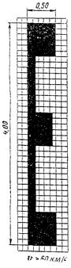
Рис. 8. Буква Е, применяемая в сочетании с цифрами для обозначения номера, присвоенного дороге, предназначенной для международного движения
Рис. 9. Буква А, применяемая для обозначения полосы проезжей части, предназначенной исключительно для движения транспортных средств общего пользования, движущихся по установленным маршрутам (автобусы, троллейбусы)
2.4.12. Для надписей (кроме разметки 1.21), выполненных на проезжей части и являющихся дополнительным средством информации, не вводящих каких бы то ни было ограничений (название населенных пунктов, маршрутов следования и т.п.), должны применяться буквы высотой 1,6 м при v £ 60 км/ч и 4,0 м при v > 60 км/ч. Размеры основных элементов букв могут выбираться с учетом размеров цифр, приведенных на рис. 6 и 7.
3.4. Разметка 2.4 применяется для обозначения опор тросовых ограждений, надолб, а также сигнальных столбиков.
3.6. С помощью разметки 2.7 должны обозначаться боковые поверхности возвышающихся островков безопасности, бордюр на закруглениях малых радиусов, в местах сужения дороги и на других опасных участках. Меньшие размеры полос l1 и l2 должны применяться для обозначения островков безопасности. Размер полос для обозначения бордюра выбирается с учетом скорости движения на данном участке. Большие размеры l1 и l2 применяются при больших скоростях.
3.7. Торцевые поверхности железобетонных брусьев, ограждений дорог, а также высоких бордюров, обращенные в сторону приближающихся транспортных средств и не имеющие разметки 2.1, наносимой на щиты, должны быть окрашены в белый цвет.
4.1. Разметка является составной частью общей схемы организации движения транспорта, разрабатываемой в составе проекта дороги или в процессе ее эксплуатации.
Разметка должна наноситься на всем протяжении дороги, за исключением дорог IV и V категории, где она выполняется только на опасных участках.
При проектировании разметки необходимо соблюдать ее соответствие устанавливаемым на дороге знакам, светофорам и другим средствам организации движения.
4.2. Перед началом проектирования схемы разметки дороги необходимо собрать и ознакомиться с материалами, характеризующими технико-эксплуатационные качества дороги, особенности ее отдельных участков, транспортные потоки и состояние аварийности.
4.3. Проектирование разметки осуществляется в несколько этапов.
4.3.1. На первом этапе определяется, на какое количество полос движения будет размечаться дорога, вид линий разметки и уточняются их основные параметры (толщина, длина штрихов и разрывов между ними).
Исходными материалами для этого являются данные о категории дороги, ее геометрических параметрах, суточной интенсивности, составе и скорости движения транспорта.
4.3.2. На втором этапе производится выявление на дороге характерных участков и комплексное решение схем их разметки.
На этом этапе, кроме определения мест расположения таких участков, уточняются типы имеющихся на дороге пересечений и примыканий, протяженность участков подъемов и спусков и величины их уклонов, радиусы горизонтальных и вертикальных кривых, ширина проезжей части на мостах и путепроводах, типы железнодорожных переездов и автобусных остановок, планировка площадок для остановок и стоянок автомобилей и автозаправочных станций, типы и ширины пешеходных переходов и переездов для велосипедистов и данные о других участках дорог. Кроме того, для выбора схем их разметки необходимо иметь данные об организации движения на этих участках, имеющихся на них средствах регулирования движения (знаки и светофоры), интенсивности и направлениях движения транспорта и пешеходов, скорости движения и составе транспортных потоков, числе и ширине полос движения и условиях видимости.
Имеющиеся в Указаниях рекомендуемые схемы разметки характерных участков дорог не охватывают всех возможных вариантов, поэтому при привязке их к конкретным участкам, имеющим особенности в геометрии или в организации движения, может потребоваться внесение некоторых изменений в геометрию схем, дополнение или исключение из них каких-либо элементов. При этом особое внимание следует обращать на организацию пешеходного и велосипедного движения, размещение автобусных остановок и соответствие разметки установленным в этих местах знакам, светофорам и другим средствам организации движения.
После комплексного решения разметки на характерном участке дороги должна быть проведена ее увязка с разметкой, имеющейся на примыкающих к ним участках дороги.
4.3.3. На третьем этапе (выполняется при разметке дорог, находящихся в эксплуатации) производится уточнение разметки в местах повышенной аварийности, возможных заторов движения и на участках, где с помощью дорожных знаков вводятся ограничения скорости, запрещаются обгоны, стоянка и остановка автомобилей.
Исходными материалами для выявления таких мест являются графики коэффициентов аварийности и безопасности, схемы мест дорожно-транспортных происшествий, графики пропускной способности и уровней загрузки, а также схема расстановки дорожных знаков.
Разметка мест повышенной аварийности и возможных заторов должна производиться как часть всего комплекса мероприятий по повышению безопасности движения и выполняться одновременно с его осуществлением. Этим комплексом может предусматриваться установка светофоров, дорожных знаков, улучшение планировки или расширение отдельных участков дорог, устройство пешеходных переходов и другие мероприятия. В соответствии с характером этих мероприятий должна соответственно корректироваться и разметка.
На участках, где с помощью дорожных знаков вводится ограничение скорости движения, необходимо соответственно изменить величину штрихов и разрывов между ними.
В местах установки знаков, запрещающих обгон, полосы движения разделяются с помощью сплошной линии.
В местах, где знаками запрещена остановка или стоянка автомобилей, наносится соответствующая разметка.
4.3.4. На четвертом этапе на схему разметки дороги наносятся указательные стрелы, номер, присвоенный этой дороге, а также другие надписи, являющиеся дополнительным средством информации водителей.
4.3.5. На пятом этапе производится выявление на дороге элементов инженерных сооружений, обстановки дороги и других объектов, находящихся в непосредственной близости от проезжей части или обочины и представляющих опасность для движения, и составление схем их разметки. Для этой цели используются материалы анализа причин дорожно-транспортных происшествий и осмотра технического состояния дорог и искусственных сооружений.
На искусственные сооружения, элементы обстановки дороги и другие объекты, подлежащие разметке, составляется ведомость с указанием мест их расположения и номеров линий вертикальной разметки, которые наносятся на них.
С точки зрения идентичности разметки к прямым горизонтальным участкам следует относить прямые участки дороги, продольные уклоны которых не превышают нормативные величины, а также участки горизонтальных и вертикальных кривых с радиусами, отвечающими требованиям, предъявляемым строительными нормами и правилами к данной категории дороги.
5.1.1. Двухполосные дороги
Разметка двухполосных дорог осуществляется при интенсивности движения 1000 и более транспортных средств в сутки. При меньшей интенсивности разметка выполняется в тех случаях, когда этого требуют условия движения.
С помощью разметки на двухполосных дорогах производится разделение встречных потоков и обозначение края проезжей части. При этом следует иметь в виду, что полосы движения, как правило, должны иметь ширину не менее 3,0 м, поэтому на дорогах с шириной проезжей части 6,0 м и менее обозначение края проезжей части с помощью линии 1.1 не производится (схемы 1.1.А, 1.1.Б). Учитывая, что существует большое количество дорог с шириной проезжей части менее 6,0 м, на них может наноситься осевая разделительная линия 1.5, которая облегчает водителям осуществлять разъезды со встречными транспортными средствами и лучше видеть направление дороги, особенно в темное время суток.
Таблица 6
|
Интенсивность движения в двух направлениях, авт./ч, при которой необходимо нанесение осевой разметки |
||
|
с помощью прерывистой линии 1.5 |
с помощью сплошной линии 1.1 |
|
|
0 - 20 |
100 - 1100 |
1100 - 1800 |
|
20 - 50 |
50 - 900 |
900 - 1700 |
|
> 50 |
0 - 700 |
700 - 1500 |
Примечание. Если интенсивность движения превышает величины, указанные в таблице, необходимо увеличение числа полос движения.
Расстояние от края проезжей части до краевой линии 1.1 должно быть не более 0,2 м.
Целесообразность нанесения линии 1.5 или 1.1 для разделения транспортных потоков противоположных направлений определяется исходя из режима движения транспорта, который, в свою очередь, зависит от интенсивности и состава транспортного потока, а также ширины проезжей части.
Выбор того или иного вида разметки производится по табл. 6.
Нанесение на дороге сплошной осевой линии 1.1 при интенсивности движения в час пик 700 - 1100 авт./ч не всегда целесообразно, так как это приведет к увеличению задержек транспорта в периоды, когда потоки не достигают указанных величин. Ее рекомендуется наносить в случаях, когда на дороге установлены знаки, запрещающие обгоны всем транспортным средствам, или потоки транспорта в течение длительного времени суток превышают величины интенсивности, указанные в табл. 6.
Табл. 6 разработана для ширины проезжей части 7,5 м. Если же ширина проезжей части больше или меньше 7,5 м, то величина наблюдаемой на дороге интенсивности движения должна быть умножена на коэффициент приведения к ширине проезжей части 7,5 м, значение которого может быть получено по табл. 7, и только после этого по табл. 6 производится выбор необходимого вида разметки.
Таблица 7
|
Значение коэффициента приведения к ширине проезжен части 7,5 м при различной интенсивности движения |
||||
|
от 0 до 500 авт./ч |
от 500 до 1000 авт./ч |
от 1000 до 1500 авт./ч |
от 1500 до 2000 авт./ч |
|
|
6,0 |
1,24 - 1,19 |
1,19 - 1,14 |
1,14 - 1,08 |
1,08 - 1,03 |
|
9,0 |
0,72 - 0,78 |
0,78 - 0,84 |
0,84 - 0,89 |
0,89 - 0,94 |
Разметка трехполосных дорог зависит от организации движения на них и режимов движения транспорта (схемы 1.2.А, 1.2.Б).
Движение на трехполосных дорогах может быть организовано таким образом, что средняя полоса используется только для совершения обгонов или для реверсивного движения.
Таблица 8
|
Интенсивность движения в двух направлениях, авт./ч, при которой производится разметка |
|||||
|
на две полосы с нанесением прерывистой осевой линии 1.5 |
по схеме 1.2А.1 |
по схеме 1.2А.2 |
по схеме 1.2А.3 |
по схеме 1.2.Б |
|
|
0 - 20 |
100 - 800 |
800 - 1500 |
1500 - 2100 |
2100 - 2600 |
> 2600 |
|
20 - 50 |
50 - 600 |
600 - 1100 |
1100 - 1900 |
1900 - 2300 |
> 2300 |
|
> 50 |
0 - 500 |
500 - 900 |
900 - 1700 |
1700 - 2100 |
> 2100 |
Выбор схемы разметки осуществляется по табл. 8 исходя из интенсивности движения по дороге в час пик и количества легковых автомобилей в потоке.
Табл. 8 разработана для ширины проезжей части 11,25 м, поэтому, если ширина проезжей части размечаемой дороги больше или меньше 11,25 м, то величину наблюдаемой на дороге интенсивности движения необходимо умножить на коэффициент приведения к ширине проезжей части 11,25 м, значение которого может быть получено по табл. 9.
Длина зон А и Б определяется по табл. 10 в зависимости от интенсивности и состава движения.
Использование средней полосы для реверсивного движения, кроме условий, указанных в табл. 8, может быть оправдано при одновременном выполнении следующих трех условий:
интенсивность движения, приходящаяся на каждую полосу в час пик, превышает 500 авт./ч;
суммарная интенсивность движения в прямом направлении больше, чем во встречном на 500 авт./ч для дорог с нечетным числом полос (одна реверсивная полоса) и на 1000 авт./ч для дорог с четным числом полос (две реверсивные полосы);
указанная неравномерность интенсивности движения изменяется по направлениям в течение суток или по дням недели и это изменение носит регулярный характер. При устройстве реверсивной полосы над ней должны устанавливаться светофоры, показывающие разрешенное направление движения транспорта по этой полосе.
Таблица 9
|
Значение коэффициента приведения к ширине проезжей части 11,25 м при различной интенсивности движения |
||||||
|
от 0 до 500 авт./ч |
от 500 до 1000 авт./ч |
от 1000 до 1500 авт./ч |
от 1500 до 2000 авт./ч |
от 2000 до 2500 авт./ч |
от 2500 до 3000 авт./ч |
|
|
10,5 |
1,19 - 1,16 |
1,16 - 1,13 |
1,13 - 1,10 |
1,10 - 1,17 |
1,17 - 1,04 |
1,04 - 1,01 |
|
12,0 |
0,77 - 0,80 |
0,80 - 0,83 |
0,83 - 0,87 |
0,87 - 0,90 |
0,90 - 0,93 |
0,93 - 0,97 |
Таблица 10
|
Длина зон А и Б при разметке трехполосной дороги по схемам 1.2. А.2 и 1.2. А.3, м |
|||||||
|
при количестве легковых автомобилей от 0 до 20 % |
при количестве легковых автомобилей от 20 до 50 % |
при количестве легковых автомобилей более 50 % |
|
||||
|
А |
Б |
А |
Б |
А |
Б |
|
|
|
900 |
100 |
400 - 300 |
|
||||
|
1000 |
100 - 140 |
350 - 260 |
|
||||
|
1100 |
100 |
400 - 300 |
120 - 180 |
300 - 220 |
|
||
|
1200 |
100 - 170 |
400 - 250 |
170 - 220 |
250 - 180 |
|
||
|
1300 |
100 - 220 |
370 - 220 |
220 - 250 |
220 - 150 |
|
||
|
1400 |
170 - 250 |
300 - 180 |
250 - 270 |
180 - 130 |
|
||
|
1500 |
100 - 220 |
400 - 250 |
220 - 270 |
250 - 160 |
270 - 290 |
160 - 120 |
|
|
1600 |
100 - 260 |
400 - 210 |
260 - 300 |
210 - 130 |
300 |
130 - 110 |
|
|
1700 |
100 - 300 |
400 - 170 |
300 - 320 |
170 - 110 |
480 - 500 |
- |
|
|
1800 |
220 - 340 |
250 - 130 |
340 - 330 |
130 - 100 |
470 - 510 |
- |
|
|
1900 |
300 - 350 |
180 - 110 |
440 - 470 |
- |
470 - 540 |
- |
|
|
2000 |
360 |
130 - 100 |
440 - 500 |
- |
500 - 700 |
- |
|
|
2100 |
390 - 360 |
100 |
450 - 560 |
- |
|
||
|
2200 |
480 - 700 |
- |
400 - 480 |
- |
|
||
|
2300 |
410 - 560 |
- |
|
||||
|
2400 |
430 - 700 |
- |
|
||||
|
2500 |
490 - 700 |
- |
|
||||
5.1.3 Многополосные дороги
Разметка многополосных дорог (число полос для движения в обоих направлениях не менее четырех) зависит от количества полос движения, наличия разделительной полосы, режимов движения транспорта и схемы организации движения. Однако в любом случае на них производится разделение потоков встречных направлений, обозначение полос движения и обозначение края проезжей части.
Разделение потоков встречных направлений обычно производится с помощью разделительной полосы, минимальная ширина которой в зависимости от категории дороги и местных условий может быть от 2 до 13,5 м (схема 1.3.Б). В случаях, когда такая полоса отсутствует, разделение встречных потоков осуществляется с помощью двойной сплошной линии 1.3 (схема 1.3.A).
При обозначении полос движения их ширина должна соответствовать требованиям СНиП. Обозначение полос движения осуществляется с помощью прерывистой линии 1.5. В случае, когда полоса движения выделяется исключительно для движения транспортных средств общего пользования, движущихся по установленным маршрутам (автобусы, троллейбусы), на ней наносится разметка 1.23 - буква А, обращенная основанием в сторону движущихся по этой полосе транспортных средств. Эта полоса может отделяться от соседних полос движения сплошной линией 1.1 (схема 1.3.Г).
Выделение реверсивных полос рекомендуется производить в соответствии с тремя условиями, изложенными в п. 5.1.2, с той разницей, что неравномерность интенсивности движения в прямом и встречном направлении движения не должна превышать суммарную пропускную способность реверсивных полос. Реверсивные полосы отделяются от других полос движения и друг от друга с помощью прерывистых линий 1.9.
Обозначение края проезжей части производится как со стороны обочин, так и со стороны разделительной полосы, с помощью сплошной линии 1.1. На дорогах, где установлены дорожные знаки 4.3 «Скоростная дорога», край проезжей части обозначается с помощью сплошной линии 1.2. При наличии бордюра краевую разметку можно не наносить.
Кроме указанных линий разметки, на полосах движения могут быть нанесены надписи, являющиеся дополнительным средством информации, не вводящим каких бы то ни было ограничений (название населенных пунктов, маршрутов следования и т.п.). Порядок нанесения этих надписей указан в п. 2.4.12.
5.2.1 Разметка двухполосных дорог
Разметка двухполосных дорог на участках подъемов зависит от длины подъема и наличия дополнительной полосы для грузового движения в сторону подъема, которая предусматривается на дорогах II категории, а при интенсивности движения более 2000 авт./сут. (достигаемой в первые пять лет эксплуатации) также и III категории с продольными уклонами величиной более 30 ‰ при длине участка свыше 1 км и с уклонами более 40 ‰ при длине участка от 0,5 до 1 км.
Если такая дополнительная полоса отсутствует, то разметка на участке подъема должна обеспечивать возможность обгона тихоходных транспортных средств, движущихся в направлении подъема, и запрещать обгоны в направлении спуска. Для этого на всем протяжении подъема, включая участки вертикальных кривых, наносится барьерная линия 1.11, которая сплошной линией обращена к полосе движения в направлении спуска, а пунктирной - к полосе движения в направлении подъема. Со стороны вершины подъема этой линии должна предшествовать линия приближения 1.6 длиной 50 м и более при v £ 60 км/ч или 100 м и более при v > 60 км/ч (схема II.А.1). При длине подъема менее 200 м на всем протяжении подъема, включая участки вертикальных кривых, наносится сплошная осевая линия 1.1, которой с двух сторон предшествует линия приближения 1.6 (схема II.A.2).
В случае когда на подъеме имеется дополнительная полоса для грузового движения, она отделяется от основной полосы с помощью прерывистой линии 1.5, а в зоне выпуклой вертикальной кривой, где видимость менее допустимой, с помощью двойной линии 1.11 с тем, чтобы запретить в этой зоне выезд грузовых автомобилей на основную полосу. Линии 1.11 должна предшествовать прерывистая линия приближения 1.6. За вершиной подъема после проезда зоны с ограниченной видимостью водителям грузовых автомобилей разрешается выезд на основную полосу движения. Здесь дополнительная полоса до конца уширения отделяется от основной полосы с помощью прерывистой линии 1.8 шириной 0,2 м. На этом участке могут быть нанесены направляющие стрелы 1.19, предупреждающие водителей об уменьшении числа полос движения в данном направлении. Кроме того, перед началом и концом уширения проезжей части в сторону подъема устанавливаются дорожные знаки, информирующие водителя о порядке и направлении движения транспортных средств по полосам.
Встречные потоки на всем протяжении уширения отделяются друг от друга с помощью сплошной линии 1.1, которой с двух сторон предшествует прерывистая линия приближения 1.6. Линия 1.6 должна наносится на протяжении не менее 50 (100) м перед линией 1.1. Рекомендуемая протяженность линии приближения 150 м у подошвы спуска и 100 м за вершиной подъема.
По краям проезжей части должна быть нанесена краевая линия 1.1 (схема II.1.Б).
5.2.2 Разметка трехполосных дорог
Схема разметки трехполосной дороги на подъеме зависит от длины подъема и разметки дороги на прилегающих горизонтальных участках, которая, в свою очередь, осуществляется в соответствии с режимами движения транспорта (см. п. 5.1.2).
В случае когда длина подъема не превышает 1200 м, движение в сторону подъема организуется в две полосы. При этом правая полоса, предназначенная для медленно движущихся транспортных средств, отделяется от средней полосы с помощью прерывистой линии 1.5, а в зоне, где видимость менее допустимой, с помощью барьерной линии 1.11 для запрещения перехода медленно движущихся автомобилей на среднюю полосу. При этом линии 1.11 предшествует линия приближения 1.6.
Полоса встречного движения отделяется от полос движения в сторону подъема сплошной линией 1.1, которой с обоих концов предшествует линия приближения 1.6, длина которой соответствует указанной в п. 5.2.1.
По краям проезжей части наносится краевая разметка с помощью сплошной линии 1.1, а в местах уменьшения числа полос для движения в данном направлении наносятся направляющие стрелы 1.16.
В зависимости от принятой схемы разметки примыкающих к подъему участков дороги могут быть различные сочетания ее сопряжения с разметкой на участке подъема (схема II.2.А.1 и II.2.A.2).
Если длина подъема превышает 1200 м, то при его разметке необходимо предусмотреть возможность обгона как для легковых автомобилей, движущихся на подъеме, так и для грузовых. Кроме того, при нанесении разметки необходимо через 700 - 800 м позволить автомобилям, движущимся на спуск, также совершать маневр обгона. При этом необходимо запретить маневры обгона в зоне с ограниченной видимостью. Разметка должна быть дополнена необходимыми дорожными знаками (схема II.2.Б).
5.3.1. При разметке автомобильных дорог на участках выпуклых кривых, помимо разделения транспортных потоков встречных направлений, обозначения полос движения и края проезжей части, необходимо запретить обгоны в зонах с фактической видимостью менее расчетного расстояния видимости М встречного автомобиля (см. табл. 1).
Таких зон на участке выпуклых кривых бывает две, одна из которых расположена с одной стороны подъема, а другая - с другой. При этом зоны с видимостью менее допустимой могут заходить за вершину кривой и перекрывать друг друга или располагаться отдельно по обеим сторонам от вершины, не доходя до вершины кривой.
5.3.2. Порядок определения наличия и протяженности зон с видимостью менее допустимого расчетного значения на кривой заключается в следующем. Путем предварительных наблюдений на данном участке замеряют скорости 100 - 150 автомобилей и, построив кумулятивную кривую, устанавливают 85 %-ное значение скорости. Затем по табл. 1 определяется соответствующее ей значение минимального расстояния видимости М. Фактическую видимость на кривой Мф определяют исходя из ее радиуса и уклонов на подходах (рис. 10). Значение фактической видимости подсчитывается по формуле
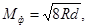
где R - радиус вертикальной кривой, м;
d - расчетная высота глаз водителя над уровнем поверхности дороги, равная 1,2 м.
Если Мф > М, то зоны с видимостью менее допустимой отсутствуют. В случае Мф < М расчеты продолжают и определяют длину тангенса. Если его значение не указано в документации и нет специальных таблиц,
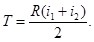
Далее определяют величину X, показывающую, насколько зоны с видимостью менее допустимой не доходят до вершины кривой или заходят за нее
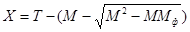
В результате вычислений величина X может получиться со знаком плюс или минус. Если величина X положительна, то зоны с видимостью менее допустимой заходят за вершину кривой на величину X (рис. 11), а если X имеет отрицательное значение, то зоны не доходят до вершины кривой на ту же величину (рис. 12).
Рис. 10. Элементы вертикальной выпуклой кривой
Наличие и протяженность зон с видимостью менее допустимой можно также определять графическим методом с помощью специальной линейки и продольного профиля дороги (см. ВСН 39-67 Минавтодора РСФСР).
Однако наиболее надежным является полевой метод. В этом случае по оси проезжей части на участке кривой через 10 м с помощью извести делают отметки. Два наблюдателя занимают исходную позицию в начале кривой, располагаясь друг от друга на расстоянии, равном минимальному расстоянию видимости М. При последовательном перемещении на следующую отметку в сторону вершины наблюдатель, расположенный ближе к началу кривой, каждый раз с уровня 1,2 м над проезжей частью (можно использовать вешку высотой 1,2 м), проверяет видимость фигуры второго наблюдателя на уровне 1,2 м. Постепенно перемещаясь и сохраняя между собой расстояние М, наблюдатели могут определить ту точку на кривой, когда видимость становится менее расчетной. Отметив начало участка с необеспеченной видимостью, наблюдатели должны перемещаться дальше до той отметки, когда фактическая видимость Мф снова окажется равной расчетной. Эта операция должна быть проделана с обеих сторон вертикальной кривой. Для обеспечения работы целесообразно иметь третьего наблюдателя, который бы подавал команды и обеспечивал синхронность передвижения от одной отметки к другой.
5.3.3. Если зоны с видимостью менее допустимой заходят за вершину кривой и частично перекрывают друг друга, то разметка выполняется таким образом, что на участке их перекрытия запрещается перестроение и обгон автомобилей с выездом в соседнюю полосу. На этом участке полосы движения разделяются с помощью сплошной линии 1.1.
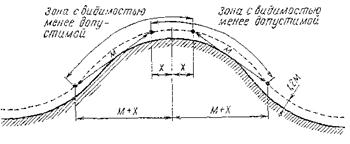
Рис. 11. Вертикальная кривая с зонами видимости менее допустимой, заходящими за вершину кривой и частично перекрывающими друг друга
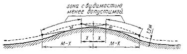
Рис. 12. Вертикальная кривая с зонами видимости менее допустимой, не доходящими до вершины кривой
На остальном протяжении зон с видимостью менее допустимой запрещается выезд автомобилей, движущихся на подъем, на соседнюю левую полосу путем нанесения линии 1.11, которой должна предшествовать линия приближения 1.6.
На остальных участках кривой производится обозначение полос движения с помощью прерывистой линии 1.5. Кроме того, на всем протяжении кривой у краев проезжей части наносится линия 1.1 (схемы III.1 и III.2).
5.3.4. Если зоны с видимостью менее допустимой не заходят за вершину кривой и не перекрывают друг друга, то на протяжении этих зон автомобилям, движущимся на подъем, запрещается перестроение или обгон с выездом на соседнюю левую сторону. Это осуществляется путем разделения транспортных потоков встречных направлений с помощью линии 1.11.
На остальных участках кривой производится обозначение полос движения с помощью прерывистой линии 1.5, приближения к сплошным линиям продольной разметки (линия 1.6) и краев проезжей части (линия 1.1).
5.4.1. Разметка автомобильных дорог на участках горизонтальных кривых малого радиуса с обеспеченной видимостью зависит от геометрических параметров дороги (радиус кривой, угол поворота трассы, расстояние видимости, ширина проезжей части, наличие уширения проезжей части, уклон виража), а также от характеристик транспортного потока (интенсивность, состав, скорость).
При этом наиболее существенное влияние имеют такие параметры, как угол поворота трассы и радиус кривой, которые характеризуют условную плавность закругления Р, определяемую по формуле
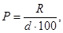
где R - радиус кривой, м;
d - угол поворота трассы, рад.
5.4.2. Разделение транспортных потоков противоположных направлений на кривой в плане осуществляется с помощью сплошной линии 1.1 при условной плавности закругления кривой Р £ 19,0. В остальных случаях разделение потоков осуществляется с помощью прерывистой линии 1.5 (схемы IV.1.A-Г и IV.2.A-Г).
5.4.3. На трехполосных дорогах с организацией движения в зоне кривой по трем полосам (схемы IV.2.B и IV.2.Г) полосы движения одного направления обозначаются с помощью прерывистой линии 1.5.
Рис. 13. Схема к определению радиуса закругления
5.4.4. В случае отсутствия данных о величине радиуса кривой определение его может быть выполнено следующим образом. На внутренней кромке проезжей части выбирают две точки, расположенные на расстоянии S. Затем по середине измеренного отрезка по перпендикуляру к нему замеряют стрелку h (рис. 13). Для повышения точности промеры рекомендуется сделать в двух-трех местах на кривой и взять средние значения S и h. Радиус вычисляют по формуле
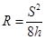
5.4.5. Если на дороге с двумя полосами движения в пределах кривой, в плане имеется уширение проезжей части, выполненное в соответствии с требованиями строительных норм и правил (величины уширения проезжей части для различных радиусов кривых в плане см. CНиП II-Д.5-72), то на кривых, характеризуемых условной плавностью закруглений Р = 0,1 - 1,0, линия разделения транспортных потоков противоположных направлений наносится в виде двух переходных кривых с круговой вставкой (схема IV.1.А), а при Р = 1,0 - 5,0 в виде двух сопрягающихся переходных кривых (схема IV.1.Б).
5.4.6. На дорогах с тремя полосами движения линии разметки на участках горизонтальных кривых должны иметь очертание, соответствующее требованиям п. 5.4.5.
5.4.7. При отсутствии на двухполосной дороге уширения линия разделения транспортных потоков противоположных направлений должна наноситься по оси проезжей части в виде круговой кривой.
5.4.8. На двухполосных дорогах, имеющих уширение, а также на участках трехполосных дорог с организацией движения в зоне кривой по двум полосам линия разделения транспортных потоков противоположных направлений в середине кривой должна быть смещена в сторону внешней кромки покрытия. Отношение ширины внутренней полосы проезжей части к ширине внешней следует назначать в соответствии с табл. 11 исходя из величины радиуса кривой.
Табл. 11 составлена без учета влияния виража. Для определения окончательной величины отношения ширины внутренней полосы к ширине внешней полученный ранее результат умножают на коэффициент, учитывающий наличие виража (табл. 12) с уклоном, большим или меньшим 40 ‰.
Таблица 11
|
Отношение ширины внутренней полосы проезжей части к ширине внешней полосы на кривых в плане B1/B2 |
|
|
10 - 15 |
1,4 |
|
15 - 20 |
1,3 |
|
20 - 30 |
1,2 |
|
30 - 50 |
1,1 |
|
> 50 |
1,0 |
Таблица 12
|
Величина виража, ‰ |
|||||
|
-20 |
0 |
+20 |
+40 |
+60 |
|
|
Коэффициент |
|||||
|
0,1 |
1,16 |
1,11 |
1,07 |
1,00 |
0,97 |
|
0,5 |
1,10 |
1,07 |
1,05 |
1,00 |
0,95 |
|
0,8 |
1,08 |
1,06 |
1,04 |
1,00 |
0,93 |
|
1,0 |
1,06 |
1,04 |
1,03 |
1,00 |
0,99 |
|
2,4 |
1,04 |
1,03 |
1,02 |
1,00 |
0,99 |
|
³ 3,2 |
1,03 |
1,02 |
1,01 |
1,00 |
0,99 |
5.4.9. Длину сплошной линии 1.1, разделяющей транспортные потоки встречных направлений, наносимой от середины кривой в обе стороны, следует назначать по табл. 13.
Таблица 13
|
Интенсивность движения, авт./ч |
Длина, м |
|||
|
при количестве легковых автомобилей от 0 до 20 % |
при количестве легковых автомобилей от 20 до 50 % |
при количестве легковых автомобилей от 50 до 100 % |
||
|
0,1 - 0,5 |
< 1100 |
700 |
700 |
700 |
|
³ 1100 |
¥ |
¥ |
¥ |
|
|
0,5 - 5,0 |
< 900 |
550 |
600 |
650 |
|
³ 900 |
¥ |
¥ |
¥ |
|
|
< 700 |
400 |
500 |
600 |
|
|
5,0 - 19,0 |
³ 700 |
¥ |
¥ |
¥ |
Полученный по табл. 13 результат умножают на коэффициент, учитывающий наличие виража (см. табл. 12) с уклоном, большим или меньшим 40 ‰, и на коэффициент приведения к ширине проезжей части 7,5 м (табл. 14).
Если получается, что длина зоны запрещения маневров (сплошной разделительной линии 1.1) равна бесконечности, то разделительная сплошная линия 1.1 должна быть нанесена не только на кривых, но и на всем протяжении дороги. С обеих сторон сплошной разделительной линии 1.1 должна предшествовать линия приближения 1.6 длиной 50 (100) м.
5.4.10. Обозначение края проезжей части с помощью сплошной линии 1.1 производится с двух сторон, если аналогичные линии наносятся на участках дороги, примыкающих к кривой.
Таблица 14
|
Ширина проезжей части, м |
||||
|
6,0 |
9,0 |
10,5 |
12,0 |
|
|
Коэффициент приведения |
||||
|
0,1 - 0,5 |
1,19 - 1,18 |
0,92 - 0,93 |
0,86 - 0,87 |
0,77 - 0,78 |
|
0,5 - 5,0 |
1,18 - 1,10 |
0,93 - 0,95 |
0,87 - 0,92 |
0,78 - 0,90 |
|
5,0 - 19,0 |
1,10 - 1,06 |
0,95 - 0,97 |
0,92 - 0,93 |
0,90 - 0,92 |
|
> 19,0 |
1,05 |
0,98 |
0,94 |
0,93 |
Таблица 15
|
Протяженность краевой разметки, м |
||
|
L1 |
L2 |
|
|
700 |
120 |
75 |
|
650 |
110 |
72 |
|
600 |
105 |
70 |
|
550 |
100 |
68 |
|
500 |
95 |
66 |
|
400 |
90 |
64 |
В случае когда на примыкающих участках дороги не производится обозначение края проезжей части (недостаточная интенсивность движения или ширина проезжей части), его необходимо выполнять в зоне кривой только с ее внешней стороны.
Нанесение краевой разметки следует начинать на расстоянии L1 до начала зоны запрещения маневров (начала разделительной линии 1.1) и заканчивать на расстоянии L2 за концом этой зоны. Величины L1 и L2 следует принимать в соответствии с табл. 15.
5.4.11. На двухполосных дорогах перед линией 1.1, разделяющей на кривой потоки противоположных направлений, наносятся направляющие стрелы 1.19. Такие же стрелы в сочетании со знаком 1.17 «Сужение дороги» наносятся на трехполосных дорогах на подходах к кривой в местах уменьшения числа полос движения.
5.4.12. Разметка автомобильных дорог на кривых малого радиуса должна быть увязана с разметкой на прямых участках дороги.
5.5.1. Разметка участков горизонтальных кривых с ограниченной видимостью должна выполняться в соответствии с п. 5.4, однако, если условная плавность закругления Р ³ 19, в зонах с видимостью менее допустимой (см. п. 2.2.1б) с помощью разметки производится запрещение обгонов.
Таких зон на участке кривой две. Одна из них образуется при движении с одной стороны кривой, другая - при движении с другой. В зависимости от геометрии кривой эти зоны располагаются отдельно одна от другой или перекрывают друг друга. Порядок определения наличия на кривой зон с видимостью менее допустимой и их протяженности аналогичен описанному в п. 5.3.2.
5.5.2. На двухполосных дорогах и трехполосных с движением на кривой по двум полосам запрещение обгонов производится путем нанесения барьерной линии 1.11, состоящей из сплошной и пунктирной линии, причем сплошная линия наносится со стороны транспортных средств, движущихся в зоне с видимостью менее допустимой на всем ее протяжении.
5.5.3. Если зоны ограниченной видимости расположены отдельно одна от другой, то между ними разделение встречных потоков осуществляется с помощью прерывистой линии 1.5, допускающей выезд транспортных средств на полосу встречного движения для обгона (схема V.2.A.2).
5.5.4. Если зоны ограниченной видимости накладываются одна на другую, то на участке их наложения наносится сплошная линия 11, разделяющая встречные потоки, которую запрещается пересекать автомобилям, движущимся в обоих направлениях (схемы V.1 и V.2.A.1).
5.5.5. На трехполосных дорогах с движением по кривой по трем полосам транспортным средствам, движущимся по внутренней полосе, запрещается в зоне с ограниченной видимостью выезд на среднюю полосу для обгона. С этой целью внутренняя полоса движения на протяжении зоны ограниченной видимости отделяется от средней полосы сплошной линией 1.1 (схема V.2.Б).
5.6.1. К нерегулируемым относятся пересечения и примыкания, на которых нет капитально оборудованных действующих объектов трехцветной светофорной сигнализации или постоянных постов ручного регулирования. Быстрый и безопасный пропуск транспортных средств на них осуществляется путем предоставления приоритета для транспортных средств, движущихся по главной дороге.
5.6.2. Разметка пересечений и примыканий должна четко выделять пути движения, обеспечивая неизменную скорость автомобилей на главной дороге. На второстепенной дороге разметка должна предупреждать водителя о предстоящем маневре и способствовать снижению скорости (схемы VI.1 - VI.4 и VII.1 - VII.4).
5.6.3. Вид разметки на пересечениях и примыканиях зависит от схемы развязки движения в узлах, принимаемых в соответствии с их геометрическими характеристиками (угол пересечения, ширина пересекающихся дорог, наличие переходно-скоростных полос и уширений проезжей части, величины радиусов кривых, уклоны, условия видимости) и характеристиками транспортных и пешеходных потоков (интенсивность, состав, скорость). При этом схемы развязки движения в узле в одном уровне с островками, переходно-скоростными полосами и зонами безопасности принимаются при расчетной интенсивности движения (в сумме для обеих пересекающихся или примыкающих дорог) свыше 1000 авт./сут. Простые схемы организации движения на пересечениях и примыканиях принимаются при расчетной интенсивности движения менее 1000 авт./сут.
5.6.4. В зоне пересечений и примыканий неодородные транзитные, скоростные и поворачивающие потоки должны разделяться с помощью островков и линий разметки. Выделенные для них полосы движения должны соответствовать четкому прохождению потоков транспорта через узел и обеспечивать плавное их слияние. Не следует использовать островки для зеленых насаждений, установки плакатов, рекламных щитов и парковой скульптуры.
5.6.5. Организация движения правоповоротных потоков на пересечениях и примыканиях осуществляется по радиусам соответствующей величины или с помощью переходно-скоростных полос (шлюзов). Переходно-скоростные полосы для обеспечения торможения и разгона автомобилей, выходящих из общего потока или входящих в него, предусматриваются на дорогах I категории при 25 авт./сут и более, въезжающих или выезжающих с дороги, на дорогах II категории при 50 авт./сут и более, а при количестве выходящих из потока и входящих в него 100 авт./сут и более также и на дорогах III категории.
Длину переходно-скоростных полос следует принимать по табл. 16.
Переходно-скоростные полосы в зоне пересечений и примыканий у кривых и не менее чем по 20 м за их пределами следует отделять от основных полос движения разделительной полосой шириной 0,75 м для дорог I и II категорий и 0,5 м для дорог III категории. Границы разделительной полосы обозначаются с помощью линий 1.1. Начало должно иметь вид островка, разделяющего транспортные потоки одного направления (линия 1.16.2), а конец должен переходить в островок, отделяющий кривую от полосы прямого направления. Контуры островков обозначаются сплошной линией 1.1, а их внутренняя площадь целиком или частично размечается наклонными параллельными линиями 1.16. Порядок нанесения параллельных линий указан в п. 2.4.1.
В зоне маневрирования переходно-скоростные полосы отделяются от основных полос движения с помощью прерывистой линии 1.8.
5.6.6. Левые повороты транспортных потоков на пересечениях и примыканиях в зависимости от их транспортной загрузки осуществляются из полосы, предназначенной для движения в прямом направлении или из специально выделенной для этой цели полосы. Полосы для левоповоротного движения могут выделяться за счет разделительной полосы или уширения проезжей части в зоне перекрестка. Для устранения помех транзитным потокам на главной дороге могут устраиваться направляющие островки, под защитой которых происходит снижение скорости и накапливание поворачивающих автомобилей.
Таблица 16
|
Продольный уклон, ‰ |
Длина полос полной ширины, м |
Длина отгона полос разгона и торможения Lот, м |
||
|
для разгона Lp |
для торможения Lт |
|||
|
I и II |
-40 |
140 |
110 |
80 |
|
-20 |
160 |
105 |
80 |
|
|
0 |
180 |
100 |
80 |
|
|
+20 |
200 |
95 |
80 |
|
|
+40 |
230 |
90 |
80 |
|
|
III |
-40 |
110 |
85 |
60 |
|
-20 |
120 |
80 |
60 |
|
|
0 |
130 |
75 |
60 |
|
|
+20 |
150 |
70 |
60 |
|
|
+40 |
170 |
65 |
60 |
|
|
IVп IV и V |
-40 |
30 |
50 |
30 |
|
-20 |
35 |
45 |
30 |
|
|
0 |
40 |
40 |
30 |
|
|
+20 |
45 |
35 |
30 |
|
|
+40 |
50 |
50 |
30 |
|
Полосы для левоповоротного движения должны включать в себя зоны отгона Lот, торможения Lт и накопления Lн. Протяженность зон отгона и торможения принимается по табл. 16. Протяженность зоны накопления Lн зависит от количества ожидающих автомобилей в очереди, которая растет с увеличением интенсивности движения и количества поворачивающих автомобилей. Протяжение зоны накопления следует принимать в соответствии с табл. 17.
Таблица 17
|
Интенсивность движения по дороге, где устраивается накопительная полоса, авт./сут |
Левоповоротное движение, % от суммарной интенсивности по основной и примыкающей дорогам |
|||
|
5 |
10 |
15 |
20 |
|
|
Длина накопительной Lн, м |
||||
|
2000 |
40 |
40 |
60 |
90 |
|
3000 |
40 |
50 |
70 |
110 |
|
4000 |
50 |
70 |
90 |
130 |
|
5000 |
70 |
90 |
120 |
160 |
|
6000 |
100 |
100 |
160 |
210 |
Полоса для левых поворотов, защищенная от прямого движения разделительной полосой или островком, отделяется от встречного потока с левой стороны в зоне торможения Lт и накопления Lн с помощью линии 1.1, линией 1.3 или разделительной полосой. С правой стороны она отделяется в зоне накопления Lн с помощью линии 1.1 или островка, а в зоне отгона Lот и торможения Lт с помощью линии 1.8.
5.6.7. На подходах к простым пересечениям и примыканиям двухполосных дорог, не оборудованным направляющими островками, по оси проезжей части должна наноситься сплошная линия 1.1, запрещающая обгоны с выездом на полосу встречного движения. Длина зоны запрещения обгона на второстепенной дороге должна быть не менее 20 м, а на главной принимается по номограмме (рис. 14) в соответствии с интенсивностью движения.
Сплошной линии 1.1 должна предшествовать прерывистая линия приближения 1.6 длиной более 50 (100) м.
5.6.8. Если перед пересечением или примыканием установлен знак 1.6 «Пересечение с главной дорогой», то на второстепенной дороге, на полосах, движение по которым связано с пересечением потока на главной дороге или вливанием в него без переходно-скоростных полос, должна наноситься поперечная разметка 1.13 и может быть нанесен треугольник приближения 1.20. Порядок их нанесения указан в пп. 2.3.2 и 2.4.8.
Рис. 14. Номограмма для определения длины (м) участка запрещения обгонов в зоне пересечения
5.6.9. Если перед пересечением или примыканием установлен знак 2.15 «Проезд без остановки запрещен», то на второстепенной дороге, на полосах, движение по которым связано с пересечением потока на главной дороге или вливанием в него без переходно-скоростных полос, наносится стоп-линия 1.12 и может быть нанесена разметка 1.21 - слово «СТОП». Порядок их нанесения указан в пп. 2.3.1 и 2.4.9.
Линии 1.1.2 и 1.13 должны наноситься с таким расчетом, чтобы обеспечивать вне населенных пунктов видимость дороги с места остановки на расстоянии 120 м вправо и 80 м влево, а в населенных пунктах 80 и 50 м соответственно.
5.6.10. Край проезжей части, как со стороны обочин на подходах и кривых, так и со стороны разделительной полосы (если таковая имеется) должен обозначаться сплошной линией.
5.6.11. Разметка проезжей части пересечений примыканий может быть дополнена указательными стрелами 1.18, наносимыми на полосах движения самостоятельно или в сочетании с установленным перед пересечением знаком 4.8 «Направление движения по полосам», а также направляющими стрелами 1.19 в сочетании со знаком 1.17 «Сужение дороги» или самостоятельно в местах, где уменьшается число полос движения в данном направлении (например, на подходах к пересечениям и примыканиям на трехполосных дорогах).
5.7.1. К регулируемым относятся пересечения примыкания, на которых движение транспорте и пешеходных потоков разделяется во времени помощью светофорной сигнализации или сигналов регулировщика. Право на движение предоставляется группам транспортных и пешеходных потоков поочередно. В каждую группу с учетом формы и размеров перекрестка, а также интенсивности движения в различных направлениях включаются потоки, при одновременном движении которых не возникает значительных взаимных помех.
5.7.2. Разметка пересечений и примыканий должна способствовать увеличению их пропускной способности, четко выделять полосы для движения транспортных потоков в различных направлениях в специально отведенные для них такты работы светофорной сигнализации, указывать места остановки транспортных средств исходя из условия обеспечения безопасности пешеходного движения, видимости светофорной сигнализации и снижения задержек транспорта (схемы VIII.1 - VIII.6 и IX.1 - IX.7).
5.7.3. На подходах к пересечениям и примыканиям встречные транспортные потоки должны отделяться друг от друга с помощью сплошной линии 1.1, 1.3 или разделительной полосы.
5.7.4. Полосы, отведенные для прямого движения, а также правых и левых поворотов, в зоне накопления Lн отделяются друг от друга с помощью сплошной линии 1.1.
5.7.5. На участках кривых, если позволяет площадь узла, полосы для правоповоротного движения отделяются от полос прямого направления с помощью разделительных островков, контуры которых обозначаются сплошной линией 1.1.
5.7.6. Полосы для правых и левых поворотов, устроенные по типу переходно-скоростных полос за счет уширения проезжей части, на участках отгона Lот и торможения Lт отделяются от полос прямого направления с помощью прерывистой линии 1.8, продолжающейся от начала отгона полосы до линии 1.1, отделяющей эти полосы на участке накопления Lн.
В других случаях сплошной линии 1.1, разделяющей указанные полосы, а также полосы прямого направления, должна предшествовать линия приближения 1.6 длиной не менее 50 (100) м.
5.7.7. В местах остановки транспортных средств должна наноситься стоп-линия 1.12, расположение которой на проезжей части должно соответствовать требованиям п. 2.3.1.
5.7.8. Края проезжей части в зоне пересечений и примыканий при отсутствии бордюра должны обозначаться с помощью линии 1.1.
5.7.9. Разметка пересечений и примыканий автомобильных дорог может быть дополнена указательными стрелами 1.18, номерами дорог 1.22 и другими необходимыми обозначениями.
5.8.1. Кольцевые пересечения в одном уровне, как правило, устраиваются в случаях, когда размеры движения на пересекающихся дорогах одинаковы или отличаются не более чем на 20 %, а число автомобилей с левоповоротным движением составляет не менее 40 % на обеих пересекающихся дорогах.
5.8.2. При кольцевом нерегулируемом движении подходящие к узлу автомобили должны плавно, без остановки, с небольшим снижением скорости входить в поток движущихся по кольцу автомобилей и на подходе к нужной дороге также плавно выходить из кольцевого потока. Все транспортные средства независимо от направления их дальнейшего движения за пределами узла подчиняются одинаковому режиму движения, за исключением потоков, следующих на ближайшую дорогу справа, так как в этом случае транспортные средства могут двигаться по отдельной полосе проезжей части пересечения, не включаясь в кольцевой поток.
5.8.3. Разметка кольцевых нерегулируемых пересечений должна способствовать плавному входу автомобилей в кольцевой поток и выходу из него, а также отделять правоповоротные потоки от кольцевого, отличающиеся от него режимом движения.
5.8.4. На подходах к пересечению транспортные потоки противоположных направлений должны разделяться сплошной линией 1.1, а в зоне кривых - с помощью островков 1.16.
Сплошной линии 1.1, на подходах должна предшествовать прерывистая линия 1.6 общей длиной не менее 50 (100) м.
5.8.5. Полосы, предназначенные для движения по кольцу, обозначаются линиями разметки.
5.8.6. Полосы, предназначенные для правых поворотов, обозначаются с помощью прерывистой линии 1.7. На них также могут быть нанесены направляющие стрелы 1.18.
5.8.7. Край проезжей части на пересечении обозначается с помощью линии 1.1.
При наличии бордюра, окаймляющего островок или внешний край покрытия на пересечении, краевая разметка со стороны бордюра может не наноситься.
5.8.8. При наличии в местах слияния транспортных потоков дорожных знаков 1.6 на проезжей части с помощью разметки 1.13 (см. п. 2.3.2) должны указываться места, где водитель должен уступить дорогу. Кроме того, для обозначения приближения к разметке 1.13 на полосе движения может быть нанесен треугольник приближения 1.20 (схемы Х.1 - Х.3).
5.9.1. Регулируемое движение по кольцу устраивается при движении мощных и разнородных потоков транспорта при большом удельном весе потоков, ответвляющихся в данном узле влево (более 25 - 30 % от общего потока ко преобладающему по размерам движения направлению), а также интенсивном пешеходном движении. При резко выраженном преобладании потока автотранспорта по определенному (главному) направлению на пересечении организуется комбинированное перекрестно-кольцевое движение.
5.9.2. При регулируемом кольцевом движении транспортные потоки, подходящие к пересечению, пропускаются через него на разрешенные сигналы светофора, как и на обычном перекрестке. Однако в отличие от порядка движения на обычном перекрестке, где левоповоротные потоки пропускаются в конце зеленой фазы или в период специально выделенной для их движения фазы, здесь они, огибая направляющий островок, плавно вливаются в поток встречного движения, а затем также плавно выходят из него.
Таким образом, движение левоповоротных потоков происходит одновременно с прямыми потоками.
5.9.3. При регулируемом перекрестно-кольцевом движении преобладающие прямые потоки на одной или обеих улицах пропускаются по кратчайшим диаметральным направлениям. В местах их пересечений с кольцевым проездом вводится регулирование движения. При такой схеме преимущества непрерывного движения по кольцу в значительной мере утрачиваются.
5.9.4. Разметка кольцевых регулируемых пересечений должна способствовать более быстрому прохождению через них преобладающих транспортных потоков, своевременной остановке автомобилей у светофоров, разделению потоков, движущихся в различных направлениях, и информации водителей о направлениях движения (схемы XI.1 и XI.2).
5.9.5. На подходах к пересечению на проезжих частях, проходящих через островок в диаметральных направлениях, встречные транспортные потоки разделяются сплошной линией 1.1, а в зоне кривых с помощью островков 1.16.
5.9.6. В местах остановки транспортных средств у светофоров наносится стоп-линия 1.12 (см. п. 2.3.1).
5.9.7. Проезжая часть перед стоп-линией на многополосных дорогах и дорогах, имеющих уширение проезжей части на подходах к пересечению для правоповоротного движения, разделяются на полосы с помощью линии 1.1. Длина линий должна соответствовать длине зоны накопления автомобилей (см. п. 5.6).
5.9.8. Сплошной линии 1.1, разделяющей потоки встречных и попутных направлений, должна предшествовать прерывистая линия приближения 1.6. В случае, когда линией 1.1 от основных полос отделяется дополнительная полоса для правого поворота, то линии 1.1 должна предшествовать прерывистая линия 1.8, начинающаяся от начала отгона дополнительной полосы.
5.9.9. Полоса, предназначенная для правоповоротного движения, на кольце обозначается с помощью прерывистой линии 1.7.
5.9.10. Край проезжей части на пересечении обозначается с помощью линии 1.1.
При наличии бордюра, окаймляющего проезжую часть, краевая разметка может не наноситься.
5.9.11. При обозначении полос движения на подходах к пересечению разметка может быть дополнена указательными стрелами 1.18, наносимыми в соответствии с п. 2.4.6.
5.10.1. На пересечениях автомобильных дорог в разных уровнях движение основных транспортных потоков происходит без взаимных помех, а правые и левые повороты осуществляются по специальным съездам с выполнением маневра ответвления и слияния с основными потоками. При устройстве неполных транспортных развязок возможно пересечение поворачивающих потоков с основным потоком на второстепенной дороге. В зависимости от планировочного решения пересечения, ответвления и примыкания могут подходить к основному потоку, как с правой, так и с левой стороны.
Для обеспечения плавного выхода и входа поворачивающих автомобилей в местах съездов и выездов на основной дороге устраивают переходно-скоростные полосы.
5.10.2. Разметка пересечений автомобильных дорог в разных уровнях должна способствовать четкому разделению прямых и поворачивающих потоков, плавному ответвлению и примыканию потоков, осуществляющих поворотное движение, а также информировать водителя о правильности направления его движения и приближающейся опасности (схемы ХII.1 и XII.2).
5.10.3. Особое внимание при разметке следует уделять местам пересечения потоков на неполных развязках, а также местам слияния и разделения потоков на развязках с прямыми или полупрямыми левоповоротными съездами.
5.10.4. На второстепенных дорогах на неполных развязках в местах пересечения поворотных потоков с основным сплошная осевая линия 1.1 должна иметь разрывы, достаточные для выполнения маневра поворота. На протяжении разрывов полосы движения могут быть обозначены с помощью прерывистой линии 1.7 (схема XII.2).
5.10.5. Межпетлевые проезды, а также переходно-скоростные полосы у кривых и не менее чем за 20 м за их пределами отделяются от основных полос движения с помощью разделительной полосы шириной 0,75 м для дорог I и II категорий и 0,5 м для дорог III категории. Границы разделительной полосы обозначаются сплошной линией 1.1. Начало и конец разделительной полосы обозначаются с помощью разметки 1.16. На пересечениях типа «клеверный лист» эти разделительные полосы могут быть двух видов. В первом случае (схема XII.1.Б.1) правоповоротный поток вливается в поток автомобилей, вышедших с петли левоповоротного съезда. Во втором случае (схема ХII.1.Б.2) эти потоки разделены, а автомобили, выходящие с правоповоротного съезда, имеют возможность самостоятельно использовать полосу разгона, что существенно повышает его пропускную способность. Целесообразность применения разделительных полос первого или второго вида из условия наименьших потерь времени автомобилями определяется в зависимости от интенсивности движения автомобилей.
|
Интенсивность движения выходящего правоповоротного потока, авт./ч.................. |
50 |
75 |
100 |
125 |
150 |
|
Интенсивность движения выходящего левоповоротного потока, авт./ч..................... |
260 |
200 |
150 |
30 |
50 |
Если рассматриваемые интенсивности менее указанных, то следует применять первый вид разделительной полосы, если равны или более, то второй.
Размеры переходно-скоростных полос назначаются в соответствии с табл. 5.
5.10.6. В случаях, когда разделительная полоса между проездом на петлевом участке, переходно-скоростными полосами и основными полосами движения отсутствует, их разделение осуществляется сплошной линией 1.1 (схема XII.1.A). Устройство отдельного входа на межпетлевой проезд l1 и выхода с него на основную полосу движения l2 для транспортных средств, осуществляющих левый поворот, возможно в том случае, когда их длина составляет не менее 50 м, так как в противном случае маневр смены полосы движения будет происходить в стесненных условиях. Для этого на участке l1 и l2 вместо линии 1.1 наносится разметка 1.11, у которой со стороны основных полос движения на участке l1 наносится пунктирная линия, а на участке l2 сплошная.
5.10.7. На участках смены полосы движения три входе на переходно-скоростную полосу и выводе с нее она отделяется от основных полос движения с помощью разметки 1.8, за исключением случая, указанного в п. 5.10.6.
5.10.8. Неполные переходно-скоростные полосы клиновидной формы на всем их протяжении отделяются от основных полос движения с помощью разметки 1.8.
5.10.9. В местах выхода поворотных потоков на основные полосы движения без переходно-скоростных полос разметка производится как на обычных пересечениях с нерегулируемым движением транспорта (п. 5.6).
5.10.10. Разметка пересечений автомобильных дорог в разных уровнях может быть дополнена указательными и направляющими стрелами, обозначениями номеров дорог и другими обозначениями.
5.11.1. Основной задачей организации движения на мостах и путепроводах является установление безопасной скорости движения автомобилей, а также обеспечение плавной траектории их движения и эпюры скоростей. Ее решение достигается рядом мероприятий, среди которых важное место занимает разметка. С ее помощью в случае необходимости производится запрещение обгонов, а также выравнивание траектории и скоростей движения транспортных средств на мостах, путепроводах и подходах к ним.
5.11.2. Схема разметки на мостах и путепроводах определяется в основном их шириной.
На двухполосных дорогах при ширине проезжей части на мосту, не превышающей 10 м, а также и на других дорогах, если число полос движения на мосту меньше, чем на подходах, производится запрещение обгонов путем нанесения сплошной линии 1.1 по оси проезжей части моста и не менее чем на 200 м за его пределами.
Сплошной линии 1.1 должна предшествовать прерывистая линия 1.6 на расстоянии ³ 50 (100) м.
5.11.3. В остальных случаях разметка проезжей части на мостах и путепроводах должна соответствовать разметке на подходах к ним.
5.11.4. Если ширина проезжей части на мосту и подходах к нему не одинакова, то с помощью уширения проезжей части или краевой разметки (линия 1.1) ее выравнивают на расстоянии, указанном на схемах ХIII.1 - ХIII.3 приложения II.
5.11.5. В местах сужения проезжей части разметка может быть дополнена направляющими стрелами 1.19, наносимыми на проезжую часть в соответствии с п. 2.4.7.
5.11.6. На опасных для движения участках дорог мосты и путепроводы должны иметь вертикальную разметку (п. 6.1).
5.12.1. Движение транспортных средств через охраняемые железнодорожные переезды осуществляется на разрешающий сигнал светофора при открытом шлагбауме, а через неохраняемые переезды только после того, как водитель убедится в отсутствии приближающегося к переезду поезда. Как правило, оно организовано в один ряд в каждую сторону. Маневрирование в зоне переездов не разрешается.
5.12.2. Для запрещения маневрирования в зоне железнодорожных переездов на подходах к нему на расстоянии не менее 100 м от крайних рельсов по оси проезжей части накосится сплошная линия разметки 1.1. (Допускается вместо линии 1.1 устанавливать возвышающиеся бортовые камни или брусья, верх которых окрашивается в белый цвет).
Линии 1.1 (или бортовому камню) должна предшествовать прерывистая линия 1.6, наносимая на расстояние 50 (100) м.
5.12.3. Край проезжей части на подходах к переезду до ближайшего рельса обозначается с помощью сплошной линии 1.1 (схемы XIV.1 и XIV.2).
5.12.4. На железнодорожном переезде, оборудованном светофорной сигнализацией, за 5 м до шлагбаума, а при его отсутствии - до светофора, на полосе движения в направлении к железной дороге наносится линия «СТОП» (разметка 1.12).
5.12.5. На железнодорожном переезде, не оборудованном светофорной сигнализацией, линия «СТОП» наносится при условии наличия перед ним дорожного знака 2.15 «Проезд без остановки запрещен». При этом расстояние от линии «СТОП» до первого рельса должно составлять не менее 10 м.
5.12.6. При наличии у переезда знака 2.1.5 разметка может быть дополнена словом «СТОП», наносимым на покрытие дороги в соответствии с п. 2.4.9.
5.13.1. Автобусные остановки на дорогах I категории располагают непосредственно за пешеходными переходами, а на дорогах других категорий их смещают по ходу движения на расстояние не менее 30 м между ближайшими боковыми стенками павильонов.
В зоне автобусных остановок должен быть обеспечен безопасный и плавный подъезд автобусов к остановкам, выезд с них на основную проезжую часть и безопасный переход проезжей части пешеходами.
5.13.2. Для осуществления плавного и безопасного подъезда автобусов к остановкам и выезда с них на всех категориях дорог должны устраиваться переходно-скоростные полосы. Переходно-скоростные полосы на длине остановочных площадок и не менее чем по 20 м за их пределами отделяют от основных полос движения разделительной, полосой шириной 0,75 м для дорог I и II категорий и 0,5 м для дорог III категории. Границы разделительной полосы обозначаются сплошной линией 1.1. Если разделительные полосы отсутствуют, то переходно-скоростные полосы на указанной длине отделяются от основных полос движения сплошной линией 1.1. На участках, где транспортные средства осуществляют переход с основных полос движения на переходно-скоростные полосы и, наоборот, они отделяются друг от друга с помощью прерывистой линии 1.8 толщиной 0,2 м (схемы XV.1 - XV.3).
5.13.3. При размещении автобусных остановок в специальных карманах они отделяются от основных полос движения с помощью разметки 1.7.
5.13.4. Автобусные остановки на участках автомобильных дорог, проходящих через населенные пункты, целесообразно располагать у общественных центров (магазинов, столовых, отделений связи и т.д.) с соответствующим их оборудованием.
При протяженности населенного пункта от 1,0 до 1,2 км оборудуется одна автобусная остановка. В населенных пунктах, имеющих большее протяжение при линейном расположении застройки, автобусные остановки располагают на расстоянии около 1,0 км друг от друга.
Автобусные остановки следует, как правило, располагать за перекрестком. Допускается их расположение до перекрестка, если:
до перекрестка расположен крупный пассажирообразующий пункт или вход в подземный пешеходный переход;
резервы пропускной способности дороги и перекрестка больше, чем за перекрестком;
существенно сокращается время, расходуемое пассажирами на пересадку по основным пересадочным направлениям перекрестка;
сразу за перекрестком начинается подъезд транспортному инженерному сооружению (мосту, тоннелю, путепроводу) или находится железнодорожный переезд.
Для создания удобств пассажирам остановочные пункты следует располагать как можно ближе к перекрестку, но при соблюдении следующих требований:
а) если остановочный пункт расположен за перекрестком, а автобусы прибывают к нему, не изменяя направления движения или после выполнения маневра левого поворота, то расстояние с остановочного пункта до перекрестка должно быть не менее 25 м;
б) если остановочный пункт расположен за перекрестком, а автобусы прибывают к нему после выполнения маневра правого поворота или если остановочный пункт расположен до перекрестка, то расстояние от остановочного пункта до перекрестка должно быть не менее 40 м.
5.13.5. В населенных пунктах в случаях, когда автобусные остановки располагаются на основных полосах движения, они обозначаются зигзагообразной линией 1.17 (см. п. 2.4.5).
С помощью этой же разметки в населенных пунктах могут обозначаться места остановок троллейбусов и стоянок автомобилей-такси.
5.13.6. На основных полосах движения двухполосных дорог у остановочных площадок и на протяжении переходно-скоростных полос, а при их отсутствии - на протяжении не менее 50 м за пределами остановочных площадок, производится запрещение обгонов путем нанесения по оси проезжей части сплошной линии 1.1.
На расстоянии не менее чем 50 (100) м ей должна предшествовать линия приближения 1.6.
5.13.7. Для обеспечения безопасного пересечения проезжей части пешеходами между остановочными площадками с помощью разметки 1.1 производится обозначение пешеходного перехода. Рекомендации по обозначению пешеходных переходов приведены в п. 5.17.
5.13.8. Край проезжей части на основных переходно-скоростных полосах обозначается сплошной линией 1.1.
5.14.1. В целях обеспечения безопасности движения при устройстве площадок для остановок стоянок автомобилей предусматривается комплекс мероприятий по устройству к ним съездов дороги и выезду с них на дорогу, отделению от проезжей части и организации движения на них.
5.14.2. Площадки рекомендуется удалять от кромки проезжей части на расстояние не менее 25 м для дорог I - III категорий и на 15 м для дорог IV - V категорий. Минимальное удаление площадок от кромок основных полос движения дорог I - III категорий должно составлять не менее 2,7 м.
Площадки на дорогах IV и V категории удалять от проезжей части не обязательно.
5.14.3. При минимальном удалении площадки от проезжей части дорог I - III категорий их отделяют разделительным островком, обрамляемым бордюром. При этом бордюры должны быть смещены от края проезжей части, обозначаемого разметкой 1.1 на расстояние не менее 0,75 м и на дорогах I и II категорий и не менее 0,5 м на дорогах III категории. Полоса между краем проезжей части и островком обозначается с помощью разметки 1.16 (схема ХVI.1).
5.14.4. При устройстве площадок на дорогах IV и V категорий вблизи проезжей части основная полоса движения со стороны площадки обозначается с помощью разметки 1.7 (схема XVI.2.Б).
5.14.5. Съезды с дорог на площадки и выезд с них выполняются через переходно-скоростные полосы, размеры и разметка которых должны соответствовать требованиям п. 5.6.5 (схема XVI.1).
В отдельных случаях с целью уменьшения количества съездов к въездов на дорогу площадки можно располагать вблизи съездов на дорогах IV и V категорий с использованием их переходно-скоростных полос (схема XVI.2).
5.14.6. Схемы площадок выбираются путем сравнения возможных вариантов расстановки автомобилей и с учетом местных условий. Могут быть приняты схемы с продольным расположением автомобилей вдоль полосы сквозного проезда, с поперечным расположением к полосе проезда и маневрирования, круговые площадки с продольным или поперечным расположением автомобилей, на кольцевом проезде, площадки веерного типа и т.п. При этом рекомендуется грузовые автомобили располагать последовательно вдоль полосы сквозного проезда.
5.14.7. Места для стоянок автомобилей обозначаются с помощью линии 1.1 с учетом схем их расстановки (схемы XVI.1 и XVI.2).
При последовательном расположении автомобилей ширину стояночной полосы принимают, как правило, разной ширине полос движения на дороге, но не менее 3 м. Длину площадки для стоянки одного легкового автомобиля с учетом возможного выруливания следует принимать равной 7,5 м, а для грузового - 10 м.
При поперечном размещении автомобилей к полосе проезда или к зоне маневрирования величину площадки для стоянки одного легкового автомобиля назначают 3´5 м и для грузового автомобиля 3´7 м.
5.14.8. Примыкающая к площадкам зона для поворотов должна иметь ширину не менее 6 м при поперечной расстановке автомобилей. При расстановке автомобилей под углом к проезду его минимальная ширина должна соответствовать величинам, указанным на схеме XVI.3.
5.14.9. Разметка площадок может быть дополнена обозначениями мест, где запрещена стоянка транспортных средств, путем нанесения у края проезжей части или по верху бордюра прерывистой линии желтого цвета 1.10. Обычно их следует наносить у краев въездов, зон маневрирования и проездов со стороны, где не предусмотрена стоянка автомобилей (схема XVI.1.Б).
5.14.10. В местах, где въезды на площадки и проезды на их территорию пересекаются пешеходными потоками, с помощью разметки 1.4 «зебра» производится обозначение пешеходных переходов (п. 2.3.3).
5.15.1. Основными задачами организации движения у автозаправочных станций являются предоставление транспортным средствам возможности безопасного и беспрепятственного съезда с дороги на территорию АЗС, подъезда без лишних затрат времени к нужной раздаточной колонке, заправки без помех другим транспортным средствам, выезда с территории АЗС и предотвращение (уменьшение) помех для движения на дороге.
5.15.2. АЗС рекомендуется удалять от кромки проезжей части на расстояние не менее 15 м с помощью островков, разметка которых со стороны проезжей части выполняется в соответствии с п. 5.14.3.
5.15.3. Съезды с дорог на территорию АЗС и выезд с них выполняются через переходно-скоростные полосы, размеры и разметка которых должны соответствовать требованиям п. 5.6.5 (схемы XVII.2.A и XVII.2.Б).
В случаях когда въезд на территорию АЗС или выезд с нее на дорогу осуществляется без переходно-скоростных полос, разметки выезда и съезда осуществляется в соответствии с требованиями к разметке простых примыканий (см. раздел 5.6 схему ХVII.1).
5.15.4. Движение на территории АЗС может быть двусторонним или односторонним, что более предпочтительно.
Двустороннее движение организуется, как правило, в случае последовательного размещения раздаточных колонок, а одностороннее при параллельном.
Для упорядочения подхода транспортных средств к раздаточным колонкам перед ними с помощью разметки 1.7 может производиться обозначение полос движения.
5.15.5. Разметка на территории АЗС может быть дополнена надписями, наносимыми на полосах движения у подъездов к колонкам и содержащими информацию о виде топлива, марке бензина, порядке заправки или иную информацию. Надписи должны соответствовать требованиям п. 2.4.12.
5.16.1. В местах, где велосипедная дорожка пересекает дорогу, наносится разметка 1.15 (схемы XVIII.1 и XVIII.2).
5.16.2. Переезды для велосипедистов должны устраиваться в местах с обеспеченной видимостью и по возможности пересекать проезжую часть под прямым углом.
5.16.3. Ширина переездов для велосипедистов принимается в зависимости от организации движения по велосипедной дорожке. При однополосном одностороннем движении ее следует принимать равной 1,8 м, при двухполосном одностороннем - 2,55 м, а при двухполосном разностороннем - 2,8 м.
5.16.4. На пересечениях дорог в одном уровне переезды рекомендуется удалять от границ перекрестка не менее чем на 10 м, если при этом не потребуется пересекать пешеходные тротуары, идущие в том же направлении. В противном случае переезды устраиваются рядом с пешеходным переходом со стороны перекрестка (схема XVIII.1).
5.17.1. Обозначение наземных пешеходных переходов производится на дорогах в местах пересечения транспортных и пешеходных потоков при интенсивности движения 1000 и более транспортных средств в сутки, а также и в других случаях, когда этого требуют условия движения (схема XIX).
5.17.2. Разметка осуществляется с помощью линий 1.14 - «зебра», наносимых на проезжую часть параллельно ее оси, независимо от наличия у перехода знака 4.13 «Пешеходный переход».
5.17.3. На автомобильных дорогах вне населенных пунктов разметку пешеходных переходов следует отодвигать от перекрестков и наносить ее у автобусных остановок.
При прохождении дорог через населенные пункты пешеходные переходы располагаются на расстоянии 200 - 400 м один от другого.
На перекрестках в населенных пунктах пешеходные переходы, как правило, устраиваются за линией «СТОП» на расстоянии не менее 1 м от нее.
Во всех случаях при выборе места разметки пешеходных переходов необходимо обеспечивать видимость приближающихся транспортных средств на расстоянии не менее 30 м.
5.17.4. На перекрестках со светофорной сигнализацией пешеходные переходы, как правило, должны быть предусмотрены на всех подходах.
5.17.5. На перекрестках с тротуарами, расположенными у проезжей части, разметку переходов, как продолжение тротуаров, рекомендуется выполнять при незначительной интенсивности поворотного движения транспортных средств, а также на перекрестках, оборудованных пешеходными светофорами.
При интенсивном поворотном движении транспортных средств пешеходные переходы рекомендуется относить от края проезжей части, идущей параллельно ему дороги, на величину не менее 4.
5.17.6. Ширина пешеходного перехода определяется исходя из интенсивности пешеходного движения по формуле
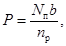
где Р - ширина пешеходного перехода, м;
Nп - интенсивность пешеходного движения, чел./ч;
nр - расчетная пропускная способность одной полосы пешеходного движения, равная 750 чел./ч;
b - ширина одной полосы пешеходного движения, равная 0,75 м.
Полученная в результате расчетов величина должна быть не менее 2,5 м, если скорость движения на данном участке дороги v не превышу 60 км/ч, и не менее 4,0 м, если скорость v больше 60 км/ч. В противном случае ширина пешеходного перехода Р принимается равной, соответственно, 2,5 или 4,0 м.
5.17.7. При ширине пешеходного перехода 4,0 м и более его разметка может быть дополнена стрелами (см. рис. 1).
5.17.8. Для создания свободных от движения транспортных средств зон, используемых пешеходами, не успевшими безостановочно перейти проезжую часть, по оси дороги на пешеходном переходе устраиваются островки безопасности. Они должны выполняться, как правило, в одном уровне с проезжей частью. Исключение составляют островки, являющиеся частью приподнятой разделительной полосы.
5.17.9. При выполнении островков безопасности в одном уровне с проезжей частью защита пешеходов осуществляется с помощью разметки или бетонными ограждающими элементами в сочетании с разметкой (схема ХХ.1.А.1).
5.17.10. Островки безопасности с защитой пешеходов с помощью одной разметки могут устраиваться, если между островком и краем проезжей части остается не менее двух полос движения. Кроме того, размеченные островки следует применять при использовании центральной полосы проезжей части в качестве реверсивной. Для лучшей видимости их границы обозначаются линией 1.1, а поверхность размечается сплошными параллельными линиями 1.16.1 (схема ХХ.1). Разметка проезжей части на подходах к островку необходимо выполнять в соответствии с п. 5.18.
5.17.11. Островки безопасности с ограждающими бетонными элементами должны устраивать, если между островком и краем проезжей части остается не менее трех полос движения, а так при наличии разделительной полосы, не используемой в качестве реверсивной. В этом случае островок не размечается, а производится вертикальная разметка ограждающих бетонных элементов (см. п. 6.1). Разметку проезжей части на подходах к островку необходимо выполнять в соответствии с п. 5.18.
5.17.12. Ширина островков безопасности принимается равной 1,5 м. При интенсивности пешеходного движения, превышающей 3 тыс. чел./ч, ширина определяется расчетом по формуле
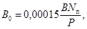
где В0 - ширина остановка безопасности, м;
В - ширина проезжей части от края проезжей части до островка, м;
Nп - интенсивность пешеходного движения в оба направления, чел./ч;
Р - ширина пешеходного перехода, м.
Длина площадки ожидания островка безопасности должна быть равна ширине пешеходного перехода Р.
5.15.1. Сужение проезжей части, как правило, бывает вследствие расположения на ней пешеходных островков безопасности, опор путепроводов и других препятствий, а также из-за уменьшения ширины или числа полос движения. Движение в таких местах организуется таким образом, чтобы исключить наезд на препятствие и обеспечить плавное изменение траектории и скорости движения транспортных средств.
5.18.2. Отклонение транспортных потоков от препятствий или на соседнюю полосу движения осуществляется переходной линией 1.1, имеющей наклон i не более 1:50 при скорости движения v £ 60 км/ч и не более 1:50 при v > 60 км/ч (схемы XX.1 и ХХ.2).
5.18.3. У островков безопасности и других препятствий расстояние от переходной линии до границы островка или боковой поверхности препятствий в свету должно составлять не менее 0,3 м.
5.18.4. Наклонной переходной линии должна предшествовать сплошная линия 1.1, параллельная оси проезжей части, разделяющая транспортные потоки встречных или попутных направлений, длина которой равняется 20 м при v £ 60 км/ч или 40 м при v > 60 км/ч.
На двухполосных дорогах у препятствий допускается вместо линии 1.1, предшествующей переходной наклонной линии, нанесение барьерной линии 1.1, такой же длины, допускающей выезд на полосу встречного движения для обгона транспортным средствам, удаляющимся от препятствия.
На участках дорог, где число полос движения увеличивается с двух до трех, вместо переходной наклонной линии и предшествующей ей разделительной линии 1.1 также допускается нанесение барьерной линии 1.11. При этом она наносится таким образом, что разрешаются обгоны транспортным средствам, движущимся со стороны двухполосного участка (схема ХХ.2.А.1)
5.18.5. Линии 1.1 или 1.11, разделяющей у препятствий и в местах изменения числа полос движения транспортные потоки встречных или попутных направлений, должна предшествовать пунктирная линия 1.6 длиной 50 м при v £ 60 км/ч или 100 м при v > 60 км/ч.
5.18.6. Край проезжей части должен обозначаться сплошной линией 1.1. Если на дороге по каким-либо причинам не предусмотрена разметка края проезжей части, то в местах сужения и у препятствий она должна выполняться не менее чем за 200 м до начала отклонения транспортных потоков и не менее чем на 100 м после его окончания.
5.18.7. На участках дорог, где меняется число полос, зоны, не используемые для движения, могут обозначаться параллельными линиями 1.16 (схемы ХХ.2.Б.1 и ХХ.2.Б.2).
5.18.8. Разметка участков дорог, где изменяется ширина или число полос движения, может быть дополнена направляющими стрелами 1.19, наносимыми посредине сужающихся или не имеющих дальнейшего продолжения полос перед началом их сужения независимо от наличия на дороге знака 1.17 «Сужение дороги», а также перед линией 1.1, разделяющей встречные потоки транспорта перед препятствием или местом сужения двухполосных дорог.
Вертикальная разметка выполняется с целью предупреждения наезда транспортных средств на элементы инженерных сооружений и обстановки дорог, который может вызвать серьезные травмы водителей и пассажиров, а также повреждения транспортных средств и самих сооружений.
6.1.1. Разметка мостов (путепроводов, виадуков, эстакад) и тоннелей должна обеспечивать видимость их опор, находящихся на обочине дороги в непосредственной близости от нее, краев пролетных строений при вертикальном габарите менее 5,0 м, торцевых поверхностей парапетов и стоек перил, тумб на разделительных полосах и высоких бордюров (схемы I.1 - I.4).
6.1.2. Обозначение опор путепроводов и тоннелей производится чередующимися наклонными полосами белого и черного цвета 2.1, наносимыми на их вертикальные поверхности, обращенные в сторону приближающихся транспортных средств. Нижние концы полос должны быть направлены в сторону проезжей части, причем размечаются не все опоры, а только крайние, расположенные навстречу движению (схемы I.1 и I.2).
Разметка может наноситься не на всю поверхность опоры, а лишь на ее ближайший к проезжей части край шириной 0,5 м на высоту 2,0 м от поверхности дороги.
6.1.3. Если путепроводы или тоннели имеют подпорные стенки, которые расположены на обочинах или в непосредственной близости от них, то на их торцевые части также наносится разметка 2.1 (схема I.3).
6.1.4. Обозначение нижних краев пролетных строений путепроводов, перекрытий тоннелей, элементов мостовых ферм, находящихся над проезжей частью, производится с целью предотвращения их порчи негабаритным грузом. Разметка 2.2 в виде чередующихся вертикальных полос белого и черного цвета наносится над серединой каждой полосы движения со стороны приближающихся транспортных средств. При этом она должна начинаться от самого низа вертикальной плоскости пролетного строения (схемы I.1 и I.3).
6.1.5. Если вдоль проезжей части в тоннелях и под путепроводами имеется бордюр, окаймляющий разделительную полосу, островок под опорами, тротуар и т.п., то он должен обозначаться чередующимися черными и белыми полосами 2.7, размеры которых выбираются в соответствии с п. 3.6 (схемы I.3 и I.4).
6.1.6. В случаях когда на разделительных полосах на въездах под путепроводы или в тоннели установлены круглые тумбы, они размечаются с помощью чередующихся полос белого и черного цвета 2.3, наносимых на всю высоту тумб по их периметру (схема I.4).
6.1.7. Торцевые поверхности парапетов и стоек перил, направленные навстречу движению, должны обозначаться с помощью разметки 2.1 на всю их высоту (схема I.4), причем обозначаются лишь крайние стойки.
6.2.1. Разметка ограждающих и направляющих устройств должна обеспечивать их хорошую видимость, подчеркивать направление дороги и выделять на ней наиболее опасные места.
6.2.2. Ограждения из железобетона и стальных прокатных полос обозначаются с помощью разметки 2.6, наносимой на середину их боковых поверхностей, обращенных в сторону проезжей части.
При установке ограждений в два яруса разметка наносится на плоскость нижнего и верхнего ограждающих элементов.
6.2.3. Ограждения, установленные на опасных участках дорог (кривые на съездах, участки, проходящие у обрывов, глубоких водостоков, участки с ограниченной видимостью и т.п.), а также концы ограждений, обозначаются с помощью разметки 2.5.
6.2.4. Торцевые части железобетонных ограждений и высоких бордюров, обращенные в сторону приближающихся транспортных средств, должны быть окрашены в белый цвет. Для лучшей видимости торцевых частей ограждений рекомендуется устанавливать перед ними щиты с нанесенной на них разметкой 2.1 (схема II.1.B, вариант I).
6.2.5. Направляющие столбики, опоры тросовых ограждений, надолбы должны обозначаться с помощью наклонных полос черного цвета (разметка 2.4), наносимых в верхней части их плоскостей, обращенных навстречу движению (схема II.3 и II.4.A). Наклон полос должен составлять 30° к горизонту, а их нижние концы должны быть обращены в сторону проезжей части. Допускается до конца срока их эксплуатации использовать сигнальные столбики, имеющие разметку, отличную от 2.4 (например, в виде оголовков различного цвета), если она выполнена на заводе и не требует возобновления в процессе эксплуатации (схема II.4.Б).
При нанесении линий разметки на автомобильных дорогах часто возникают трудности и допускаются ошибки в определении их конфигурации, особенно на участках, где траектории движения транспортных средств имеют криволинейный характер. Ниже приводятся рекомендации по построению линий и элементов разметки в зоне пересечений автомобильных дорог и в местах разрывов разделительных полос как наиболее часто встречающихся на дороге.
7.1.1 Независимо от планировочного решения пересечения режим движения на главной дороге не должен изменяться, т.е. расположение всех элементов планировки пересечения должно быть таким, чтобы оно не оказывало влияния на транспортный поток на главной дороге или, в крайнем случае, это влияние должно быть сведено к минимуму, что достигается путем введения в его планировку островков, уширений проезжей части, разделительных и переходно-скоростных полос.
7.1.2. Форма и расположение островков на пересечении должны соответствовать траектории движения автомобилей. В связи с этим построение островков сводится в основном к построению таких траекторий.
7.1.3. Очертания траекторий движения поворачивающих автомобилей рекомендуется выполнять по коробовым кривым, при этом величины радиусов должны соответствовать требованиям действующих строительных норм и правил.
На существующих пересечениях очертания траекторий движения поворачивающих автомобилей могут быть получены по следам наката на покрытии.
7.1.4. Ширину проезжей части обособленной (канализированной) полосы движения на участках закруглений рекомендуется принимать равной 5 м. Уширение должно осуществляться на протяжении переходной кривой.
7.1.5. Принципы построения очертаний разделительных островков на пересечениях и примыканиях дорог в одном уровне приведены на схемах 1.А и 1.Б.
7.2.1. Разрывы в разделительной полосе устраиваются на пересечениях и примыканиях дорог, в местах разворота и в других случаях, когда маневр, совершаемый транспортным средством, связан с пересечением разделительной полосы.
Таблица 18
|
Радиус поворота R, м |
Ширина разделительной полосы М, м |
Минимальная величина разрыва, м |
Радиус поворота R, м |
Ширина разделительной полосы М, м |
Минимальная величина разрыва, м |
||
|
при полукруглой форме конца L¢ |
при пулевидной форме конца L |
при полукруглой форме конца L¢ |
при пулевидной форме конца L |
||||
|
12 |
1,2 |
23,2 |
23,2 |
15 |
8,5 |
22,0 |
12,2 |
|
1,8 |
22,6 |
18,3 |
9,8 |
20,7 |
12,2 |
||
|
2,4 |
22,0 |
16,2 |
11,0 |
19,5 |
12,2 |
||
|
3,1 |
21,4 |
14,3 |
12,2 |
18,3 |
12,2 |
||
|
3,7 |
20,7 |
13,1 |
15,2 |
15,2 |
12,2 |
||
|
4,3 |
20,1 |
12,2 |
18,3 |
12,2 |
12,2 |
||
|
4,9 |
19,5 |
12,2 |
21,4 |
12,2 |
12,2 |
||
|
6,1 |
18,3 |
12,2 |
|||||
|
7,3 |
17,1 |
12,2 |
23 |
1,2 |
44,5 |
37,2 |
|
|
8,5 |
15,9 |
12,2 |
1,8 |
43,9 |
35,1 |
||
|
9,8 |
12,2 |
12,2 |
2,4 |
43,3 |
33,6 |
||
|
11,0 |
12,2 |
12,2 |
3,1 |
42,7 |
32,0 |
||
|
12,2 |
12,2 |
12,2 |
3,7 |
42,1 |
30,5 |
||
|
15,2 |
12,2 |
12,2 |
4,3 |
41,5 |
29,3 |
||
|
18,3 |
12,2 |
12,2 |
4,9 |
40,9 |
28,1 |
||
|
12,2 |
6,1 |
39,6 |
25,9 |
||||
|
7,3 |
38,4 |
23,8 |
|||||
|
15 |
1,2 |
29,3 |
29,3 |
8,5 |
37,2 |
22,3 |
|
|
1,8 |
28,7 |
23,2 |
9,8 |
36,0 |
20,4 |
||
|
2,4 |
28,1 |
20,7 |
11,0 |
34,8 |
18,9 |
||
|
3,1 |
27,4 |
18,9 |
12,2 |
30,5 |
17,4 |
||
|
3,7 |
26,8 |
17,7 |
18,3 |
27,4 |
12,2 |
||
|
4,3 |
26,2 |
16,2 |
24,4 |
21,4 |
12,2 |
||
|
4,9 |
25,6 |
15,2 |
30,5 |
15,2 |
12,2 |
||
|
6,1 |
24,4 |
13,4 |
33,6 |
12,2 |
12,2 |
||
|
7,3 |
23,2 |
12,2 |
36,6 |
12,2 |
12,2 |
||
7.2.2. Минимальная величина разрыва разделительной полосы зависит от радиуса поворота R, который необходимо обеспечить, ширины разделительной полосы М и типа ее конца. Ее значения для конца полукруглой L¢ и пулевидной L форм приведены в табл. 18.
Кроме того, необходимо, чтобы величина разрыва не была меньше ширины проезжей части и обочин пересекающей дороги и не меньше 12,2 м (схема II.Г.1).
7.2.3. При интенсивности движения по дороге 2000 авт./сут и более на ее пересечениях должны устраиваться дополнительные полосы для левых поворотов, которые при наличии разделительной полосы должны выделяться за ее счет (схемы А.1 - А.3).
7.2.4. При интенсивности поворачивающего потока 30 ед./ч вместо дополнительных полос могут использоваться зоны, образованные скошенной частью разделительной полосы, имеющей конец специальной формы (схема Г.3). В этих случаях ширина разделительной полосы должна быть не менее величины, указанной в табл. 19, где даны параметры для построения конца подобной формы.
7.2.5. В зоне перехода автомобилей с основной полосы движения на полосу для левых поворотов граница разделительной полосы может иметь форму двух обратных кривых одинакового радиуса (схема 2.Б.1), двух обратных кривых, из которых первая имеет вдвое больший радиус, чем вторая (схема 2.Б.2), и двух кривых одинакового радиуса с прямой вставкой между ними длиной L/3 (схема 2.Б.3). Предпочтительной является схема 2.Б.3. Меньшие величины L и радиусов принимаются при меньших значениях скорости движения по основным полосам в стесненных условиях.
7.2.6. Ширина разделительной полосы, окаймленной бордюром, в месте ее сужения дополнительной полосой для левого поворота не должна быть менее 1,2 м. В случае когда разделительная полоса обозначена разметкой на покрытии дороги, она целиком может быть использована для выделения дополнительной полосы для левого поворота.
Таблица 19
|
Параметры скошенного конца разделительной полосы |
||||||||||||||
|
при R = 12 м |
при R = 15 м |
при R = 25 м и длине автомобиля £ 15,2 м |
при R = 25 м и длине автомобиля > 15,2 м |
|||||||||||
|
С = 0,6 |
С = 1,2 |
С = 1,8 |
a, град |
R1, м |
L, м |
a, град |
R1, м |
L, м |
a, град |
R1, м |
L, м |
a, град |
R1, м |
L, м |
|
5,2 |
5,8 |
6,4 |
6,2 |
95,0 |
26,3 |
|||||||||
|
5,5 |
6,1 |
6,7 |
9,6 |
95,0 |
24,4 |
|||||||||
|
6,1 |
6,7 |
7,3 |
17,0 |
60,0 |
20,7 |
6,9 |
95,0 |
25,9 |
||||||
|
6,7 |
7,3 |
8,0 |
11,0 |
95,0 |
23,8 |
6,4 |
95,0 |
26,2 |
||||||
|
7,3 |
8,0 |
8,6 |
15,5 |
95,0 |
21,7 |
8,8 |
95,0 |
25,0 |
7,9 |
95,0 |
25,3 |
|||
|
8,0 |
8,6 |
9,2 |
20,2 |
49,0 |
19,2 |
11,2 |
95,0 |
23,8 |
10,0 |
95,0 |
24,4 |
|||
|
8,6 |
9,2 |
9,8 |
13,7 |
95,0 |
26,2 |
12,4 |
95,0 |
23,2 |
||||||
|
9,2 |
9,8 |
10,4 |
16,3 |
76,0 |
21,3 |
14,6 |
95,0 |
22,0 |
||||||
|
9,8 |
10,4 |
11,0 |
17,0 |
70,0 |
20,7 |
|||||||||
Примечание. Расчеты выполнены для автомобилей, имеющих ширину не более 2,6 м.
Таблица 20
|
Параметры конца, м |
||||||
|
при v = 32 км/ч, R = 27,5 м |
при v = 40,0 км/ч, R = 45,8 м |
при v = 48 км/ч, R = 70,2 м |
||||
|
L |
b |
L |
b |
L |
b |
|
|
6,10 |
17,7 |
19,8 |
20,2 |
23,8 |
21,6 |
27,5 |
|
9,15 |
14,6 |
20,7 |
17,4 |
25,9 |
19,2 |
30,8 |
|
12,20 |
12,2 |
21,6 |
15,2 |
27,5 |
17,4 |
33,3 |
|
15,25 |
- |
- |
13,4 |
29,0 |
15,5 |
35,1 |
|
18,30 |
- |
- |
- |
- |
14,0 |
37,2 |
|
21,35 |
- |
- |
- |
- |
12,5 |
39,1 |
Примечание. R1 = 15 м; R2 = М/5.
7.2.7. В зависимости от ширины разделительной полосы М ее конец, суженный дополнительной полосой, может иметь различную форму. Так, при М £ 5 м он может быть закруглен по радиусу (схема 2.В.1); при М > 5 м ее конец может быть скошен со стороны встречного потока автомобилей на величину ³ 0,6 м, а оставшаяся часть закруглена по радиусу (схема 2.В.2); при М > 5,5 м он может иметь пулевидную или иную форму (схема 2.В.3).
7.2.8. В случаях когда разделительная полоса имеет ширину более 6 м, дополнительная полоса для левых поворотов может быть защищена от основного потока с правой стороны с помощью островка клиновидной формы (схемы 2.В.4 и 2.В.5).
7.2.9. Построение конца пулевидной формы осуществляется в соответствии со схемой 2.Г.2 по размерам, указанным в табл. 20, которые зависят от ширины разделительной полосы М и скорости движения поворачивающего автомобиля v.
7.3.1. Переходно-скоростные полосы, применяемые для обеспечения безопасного съезда и выезда на дорогу, отделяются от основных полос, движения с помощью разметки 1.8, а в зоне кривых и не менее чем на 20 м за их пределами с помощью разделительной полосы ширимой 0,75 м для дорог I и II категорий и 0,5 м для дорог III категории.
7.3.2. Разметка, отделяющая переходно-скоростные полосы от основных полос движения, должна наноситься таким образом, чтобы ее граница, обращенная в сторону основной полосы, была на одной линии с внутренней границей краевой разметки, наносимой до переходно-скоростной полосы, и тем самым не снижалась ширина основной полосы движения (схема 3.А).
7.3.3. Начало и конец разделительной полосы между переходно-скоростной и основной полосой движения должны быть оформлены в виде разделительных островков и иметь разметку 1.16.2 и 1.16.3, которая может быть продолжена и на самой разделительной полосе (схемы 3.Б.1 и 3.Б.2).
7.3.4. Граница разделительного островка со стороны переходно-скоростной полосы должна иметь уклон по отношению к основным полосам не более 1:20.
7.3.5. Длина разделительных островков в начале и в конце разделительной полосы для величины i = 1:20 составляет 13 м для полос шириной 0,75 м и 8 м для полос шириной 0,5 м.
8.1. Для улучшения видимости разметки и зрительной ориентации водителей в темное время суток на участках дорог, не имеющих искусственного освещения, разметка может выполняться из светоотражающих материалов или дополняться светоотражающими элементами - катафотами.
8.2. Установку светоотражающих элементов на проезжей части рекомендуется производить на многополосных дорогах для обозначения границы между встречными потоками транспорта и края проезжей части.
8.3. Расстояние между катафотами, устанавливаемыми на проезжей части, должно составлять 4 - 12 м при скорости движения равной или менее 60 км/ч, а при большей скорости - 12 - 16 м.
8.4. На дорогах, обозначенных дорожным знаком 4.3 «Скоростная дорога», горизонтальная разметка должна быть преимущественно светоотражающей.
8.5. Белые полосы 2.1 - 2.3 должны быть на 2/3 их ширины покрыты белой светоотражающей пленкой или светоотражающей краской, наносимой посредине этих полос по всей их длине.
8.6. Черные полосы 2.4, наносимые на направляющие и ограждающие устройства, должны иметь светоотражающие элементы в виде прямоугольника шириной 4 и высотой не менее 10 см, расположенного вертикально в верхней части столбика (схема II.4).
Допускается применение аналогичных элементов для маркировки в неосвещенных местах деревьев, расположенных в непосредственной близости от проезжей части дороги.
8.7. Ограждающие устройства, размечаемые с помощью черных и белых полос 2.5 и 2.6, должны иметь светоотражающие элементы, форма и размеры которых зависят от их конструкции (схемы II.1 и II.2).
Расстояния между светоотражающими элементами, применяемыми совместно с разметкой 2.4 - 2.6, должны соответствовать расстояниям установки сигнальных столбиков.
В частности, на прямых участках дорог в плане на насыпях их следует принимать равными 50 м;
при прохождении дорог через болота, вдоль водотоков глубиной более 1 м, а также в зоне расположения малых искусственных сооружений и на подходах к ним - через 10 м;
на ответвлениях пересечений с внутренней стороны закруглений в пределах кривых при радиусах менее 50 м - через 5 м;
Таблица 21
|
Расстояние установки светоотражающих элементов на кривой, м |
Расстояние установки светоотражающих элементов на прямых участках, примыкающих к кривой, м |
|||
|
1-й элемент перед и за кривой |
2-й элемент перед и за кривой |
3-й элемент перед и за кривой |
||
|
1500 |
25 |
50 |
50 |
50 |
|
1000 |
20 |
40 |
50 |
50 |
|
700 |
15 |
36 |
50 |
50 |
|
500 |
15 |
33 |
49 |
50 |
|
400 |
15 |
30 |
49 |
50 |
|
300 |
10 |
28 |
48 |
50 |
|
200 |
10 |
27 |
47 |
50 |
|
100 |
10 |
25 |
45 |
50 |
|
90 |
10 |
23 |
38 |
50 |
|
80 |
10 |
20 |
33 |
50 |
|
70 |
10 |
17 |
29 |
50 |
|
60 |
5 |
15 |
24 |
48 |
|
50 |
5 |
12 |
20 |
40 |
то же, при радиусах более 50 м, а также на насыпях с внешней стороны закруглений в плане в зависимости от радиуса кривых расстояния между светоотражающими элементами следует принимать по табл. 21.
8.8. На торцевые поверхности железобетонных брусьев ограждений дорог, а также высоких бордюров, обращенные в сторону приближающихся транспортных средств и не имеющие разметки 2.1, нанесенной на щиты, должна быть нанесена под углом 30° к горизонту белая полоса шириной 0,1 м из светоотражающей пленки или краски. Нижний конец наклонной полосы должен быть обращен в сторону проезжей части (схема II.I.В, вариант 2).
9.1. Разметка должна выполняться красками, термопластичными массами и другими материалами, соответствующими установленным ГОСТ, ТУ и БТУ, по схемам, разработанным в соответствии с технической документацией, согласованной с МВД СССР.
9.2. Разметка, выполненная термопластичными массами, не должна выступать над проезжей частью более чем на 6 мм. Светоотражающие элементы, используемые для зрительной ориентации водителей в сочетании с горизонтальной разметкой или самостоятельно, не должны в целях безопасности движения возвышаться более чем на 15 мм над проезжей частью.
9.3. Поверхность горизонтальной разметки, выполненной из термопластичных масс или других долговечных материалов, кроме красок, должна иметь коэффициент сцепления 0,4 и более.
9.4. Линии горизонтальной разметки, имеющие одинаковую ширину, наносятся на покрытие дороги с помощью разметочных машин. В других случаях разметка выполняется вручную с помощью пистолета-краскораспылителя, ручного термоукладчика или кисти по шаблонам.
Во всех случаях термопластик или краска наносится на сухую очищенную поверхность проезжей части с соблюдением соответствующей технологии.
9.5. Вертикальная разметка выполняется нитроэмалями, которые наносятся непосредственно на поверхность элементов инженерных сооружений и дорожных устройств. В случаях, когда разметка 2.1 и 2.2 не может быть нанесена таким образом (элементы имеют неровную поверхность или имеются отверстия в предполагаемой зоне нанесения разметки), она наносится на щиты соответствующих размеров.
Если у торцов ограждений устанавливаются щиты с разметкой 2.1 (схема II.1.В), то их размеры должны быть таковы, чтобы щиты незначительно выступали за габариты ограждения и не мешали в зимнее время уборке снега.
Щиты могут изготавливаться из металла, пластмассы или других материалов при условии обеспечения необходимой прочности и устойчивости при различных атмосферных условиях.
Щиты с нанесенной на них разметкой 2.1 и 2.2 могут крепиться непосредственно к поверхности маркируемых элементов или устанавливаться перед ними на специальных консолях, стойках и т.п.
9.6. Для выполнения светоотражающей горизонтальной разметки дорог используется краска или термопластик, в которые добавляются стеклянные микрошарики. Существуют три способа добавления микрошариков. При первом микрошарики добавляются в краску и термопластик до нанесения разметки, при втором обычную краску или термопластик наносят на покрытие, а затем по еще незатвердевшему слою равномерно распределяют микрошарики, при третьем, который является наиболее предпочтительным, микрошарики вводятся в краску или термопластик до их нанесения на покрытие, как в первом случае, и после нанесения, как во втором случае.
Тыльную сторону светоотражающей пленки обезжиривают таким же образом, смазывают тонким слоем эпоксидного клея, накладывают на подготовленное место и прокатывают резиновым валиком.
Если светоотражающая пленка имеет с тыльной стороны клеевой слой, то с нее снимают защитный слой бумаги, накладывают на подготовленное место и прокатывают резиновым валиком.
9.8. Светоотражающие элементы, применяемые с разметкой 2.4, могут представлять собой катафоты (сферические или уголковые) или выполняться из светоотражающей пленки или краски. Они должны быть расположены вертикально в центре черной наклонной полосы, наносимой на ограждающие или направляющие устройства. При этом пленка или краска наносится непосредственно на поверхность ограждающего или направляющего устройства или на пластины из металла, пластмассы или другого материала, прикрепляемые к этим устройствам.
При маркировке такими элементами деревьев, расположенных в непосредственной близости от проезжей части, эти элементы могут крепиться к стволам деревьев на высоте 60 - 70 см с помощью гвоздей или шурупов.
В случаях, когда маркировка сигнальных столиков выполняется путем окраски их оголовков в цвета, отличные от цвета столбиков, светоотражающие элементы должны располагаться в верхней части столбика под оголовком.
9.9. Светоотражающие элементы, применяемые с разметкой 2.5 и 2.6 для обозначения осаждений, как правило, выполняются из светоотражающей пленки или краски, наносимой на рабочую поверхность светоотражающих устройств, предусмотренных конструкцией ограждений1.
1 Элементы ограждений автомобильных дорог. Типовой проект. Ч. 1. Серия 3.503-4. Вып. 145-66. Союздорпроект.
Технология нанесения светоотражающей пленки на рабочие плоскости светоотражающих устройств, применяемых с разметкой 2.4 - 2.6, должна соответствовать требованиям п. 9.7.
9.10. Светоотражающие элементы, применяемые с разметкой 2.4 - 2.6 или самостоятельно, должны быть справа по направлению движения красного цвета, а слева белого или, что более предпочтительно, желтого.
9.11. Цвет разметки должен соответствовать цветам, указанным в ГОСТ 13508-74 «Разметка дорожная».
9.12. При повторном нанесении разметки не должно оставаться видимых следов старой разметки.
ГОРИЗОНТАЛЬНАЯ РАЗМЕТКА
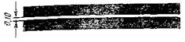
1.1. Разделение транспортных потоков противоположных направлений (п. 2.2.1, б)
Обозначение полос движения (п. 2.2.2, в).
Обозначение края проезжей части (п. 2.2.5).
Обозначение границ участков проезжей части, на которые въезд запрещен (п. 2.4.1).
Обозначение границ мест стоянки транспортных средств (п. 2.4.2).
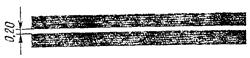
1.2. Обозначение края проезжей части на дорогах, отнесенных по условиям движения к скоростным (п. 2.2.5).
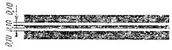
1.3. Разделение транспортных потоков противоположных направлений (п. 2.2.1, в).
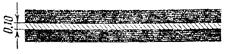
1.4. Обозначение мест, где запрещена остановка транспортных средств (п. 2.4.3).
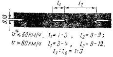
* Здесь и далее под скоростью движения v следует считать для вновь сооружаемых улиц и дорог величины, соответствующие 0,7 от расчетной скорости, а для находящихся в эксплуатации скорость, которую на данном участке не превышает 85 % транспортных средств.
1.5. Разделение транспортных потоков противоположных направлений (п. 2.2.1а)
Обозначение полос движения (п. 2.2.2, а)
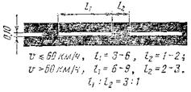
1.6. Обозначение приближения к сплошной липни продольной разметки (п. 2.2.4).
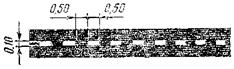
1.7. Обозначение полос движения в пределах перекрестка (п. 2.2.2, б)
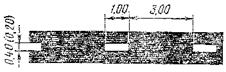
1.8. Обозначение границы между полосой ускорения или замедления (переходно-скоростной полосой) и основной полосой проезжей части (п. 2.2.3).
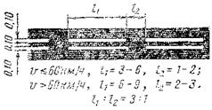
1.9. Обозначение реверсивных полос (п. 2.2.2, д).
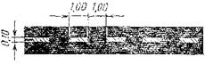
1.10. Обозначение мест, где запрещена стоянка транспортных средств (п. 2.4.4).
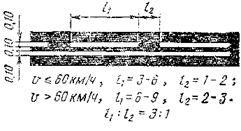
1.11. Разделение транспортных потоков противоположных или попутных направлений в местах, где необходимо ограничить маневрирование на проезжей части (п. 2.2.1, г, п. 2.2.2, г)
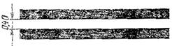
1.12. Обозначение места остановки транспортных средств - «стоп-линия» (п. 2.3.1).
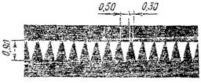
1.13. Обозначение места, где водитель обязан уступить дорогу (п. 2.3.2).
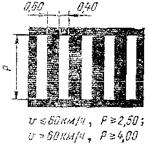
1.14. Обозначение пешеходного перехода «зебра» (п. 2.3.3).
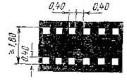
1.15. Обозначение переезда для велосипедистов (п. 2.3.4).
ВЕРТИКАЛЬНАЯ РАЗМЕТКА
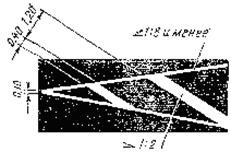
1.16.1. Обозначение островков, разделяющих транспортные потоки противоположных направлений (п. 2.4.1).
1.16.2. Обозначение островков, разделяющих транспортные потоки одного направления (п. 2.4.1).
1.16.3. Обозначение островков в местах слияния транспортных потоков (п. 2.4.1).
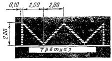
1.17. Обозначение остановок транспортных средств общего пользования, движущихся по установленным маршрутам (автобусы, троллейбусы), и стоянок автомобилей-такси (п. 2.4.5).
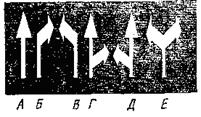
1.18. Обозначение направлений движения по полосам (п. 2.4.6).
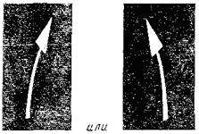
1.19. Обозначение приближения к сужению проезжей части или к сплошной линии продольной разметки 1.1 (п. 2.4.7).
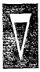
1.20. Обозначение приближения к поперечной разметке 1.13 (п. 2.4.8).
1.21. Обозначение приближения к поперечной разметке 1.12 (п. 2.4.9).
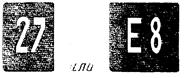
1.22. Обозначение номера дороги (п. 2.4.10).
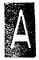
1.23. Обозначение полосы проезжей части, предназначенной исключительно для движения транспортных средств общего пользования, движущихся по установленным маршрутам (автобусы и троллейбусы) (п. 2.4.11).
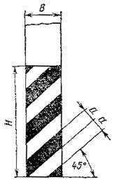
Н < 2,00, B £ 0,30, а = 0,10;
Н < 2,00, В > 0,30, а = 0,15;
Н ³ 2,00, а = 0,20
2.1. Обозначение вертикальных поверхностей дорожных сооружений (опор мостов, путепроводов, торцевых частей парапетов и т.д.) (п. 3.1).
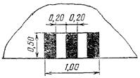
2.2. Обозначение нижнего края пролетного строения путепроводов и мостовых ферм (п. 3.2).
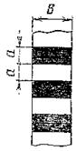
В £ 0,30, а = 0,10;
В > 0,30, а = 0,15
2.3. Обозначение круглых тумб на островках безопасности (п. 3.3).
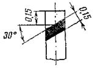
2.4. Обозначение сигнальных столбиков, надолб, опор тросовых ограждений и т.п. (п. 3.4).
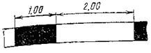
3.5 Обозначение боковых поверхностей ограждений дорог на опасных участках (п. 3.5).
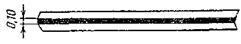
2.6. Обозначение боковых поверхностей ограждений дорог (п. 3.5).
l1 = 0,20 - 1,00 l2 = 0,40 - 2,00
l1:l2 = 1:2
2.7. Обозначение бордюра на опасных участках и вертикальных поверхностей возвышающихся островков безопасности (п. 3.6).
ГОРИЗОНТАЛЬНАЯ РАЗМЕТКА
I. Разметка автомобильных дорог на прямых горизонтальных участках
А. БЕЗ ОБОЗНАЧЕНИЯ КРАЯ ПРОЕЗЖЕЙ ЧАСТИ
Б. С ОБОЗНАЧЕНИЕМ КРАЯ ПРОЕЗЖЕЙ ЧАСТИ
А. С ИСПОЛЬЗОВАНИЕМ СРЕДНЕЙ ПОЛОСЫ ДЛЯ ОБГОНОВ
Б. С ИСПОЛЬЗОВАНИЕМ СРЕДНЕЙ ПОЛОСЫ ДЛЯ РЕВЕРСИВНОГО ДВИЖЕНИЯ
В. С ИСПОЛЬЗОВАНИЕМ СРЕДНИХ ПОЛОС ДЛЯ РЕВЕРСИВНОГО ДВИЖЕНИЯ
Г. С ВЫДЕЛЕНИЕМ ПОЛОС ИСКЛЮЧИТЕЛЬНО ДЛЯ ДВИЖЕНИЯ ТРАНСПОРТНЫХ СРЕДСТВ ОБЩЕГО ПОЛЬЗОВАНИЯ
II. Разметка автомобильных дорог на участках подъемов
А. БЕЗ ДОПОЛНИТЕЛЬНОЙ ПОЛОСЫ НА ПОДЪЕМЕ
А.1. ПРИ ДЛИНЕ ПОДЪЕМА Lп БОЛЕЕ 200 м
А.2. ПРИ ДЛИНЕ ПОДЪЕМА Lп МЕНЕЕ 200 м
Б. ПРИ НАЛИЧИИ ДОПОЛНИТЕЛЬНОЙ ПОЛОСЫ НА ПОДЪЕМЕ
|
Интенсивность движения в сторону подъема, авт./ч.... |
200 |
200 |
400 |
³ 500 |
|
Общее протяжение полосы за пределами подъема S, м |
50 |
100 |
150 |
200 |
А. НА ПОДЪЕМАХ ДЛИНОЙ МЕНЕЕ 1200 м
III. Разметка автомобильных дорог на участках выпуклых кривых с ограниченной видимостью
1. Зоны ограниченной видимости частично перекрывают друг друга
Б.1. ПРИ ДВИЖЕНИИ ПО КРИВОЙ ПО ДВУМ ПОЛОСАМ
Б.2. ПРИ ДВИЖЕНИИ ПО КРИВОЙ ПО ТРЕМ ПОЛОСАМ
2. Зоны ограниченной видимости не перекрывают друг друга
Б.1. ПРИ ДВИЖЕНИИ ПО КРИВОЙ ПО ДВУМ ПОЛОСАМ
Б.2. ПРИ ДВИЖЕНИИ ПО КРИВОЙ ПО ТРЕМ ПОЛОСАМ
IV. Разметка автомобильных дорог на участках горизонтальных кривых малого радиуса
V. Разметка автомобильных дорог на участках горизонтальных кривых с ограниченной видимостью
2. Трехполосные дороги
А. ПРИ ДВИЖЕНИИ ПО КРИВОЙ ПО ДВУМ ПОЛОСАМ
А.1. ЗОНЫ ОГРАНИЧЕННОЙ ВИДИМОСТИ ЧАСТИЧНО ПЕРЕКРЫВАЮТ ДРУГ ДРУГА
А.2. ЗОНЫ ОГРАНИЧЕННОЙ ВИДИМОСТИ НЕ ПЕРЕКРЫВАЮТ ДРУГ ДРУГА
Б. ПРИ ДВИЖЕНИИ ПО КРИВОЙ ПО ТРЕМ ПОЛОСАМ
Примечание. Если зоны с видимостью менее допустимой не перекрывают друг друга, схема разметки не меняется.
VI. Разметка крестообразных пересечений автомобильных дорог в одном уровне с нерегулируемым движением транспорта
1. Пересечение дороги V категории с дорогами различных категорий
А. ПЕРЕСЕЧЕНИЕ С ДОРОГОЙ IV КАТЕГОРИИ
Б. Пересечение с дорогой III категории
Б.1
Б.2.
В. ПЕРЕСЕЧЕНИЕ С ДОРОГОЙ II КАТЕГОРИИ
В.1.
В.2.
2. Пересечение дороги IV категории с дорогами различных категорий
А. ПЕРЕСЕЧЕНИЕ С ДОРОГОЙ IV КАТЕГОРИИ
Б. ПЕРЕСЕЧЕНИЕ С ДОРОГОЙ III КАТЕГОРИИ
Б.1. ПЕРЕСЕЧЕНИЕ С ДОРОГОЙ II КАТЕГОРИИ
Б.2. ПЕРЕСЕЧЕНИЕ С ДОРОГОЙ II КАТЕГОРИИ, НЕ ОБОРУДОВАННОЕ ПЕРЕХОДНО-СКОРОСТНЫМИ ПОЛОСАМИ
3. Пересечение дороги III категории с дорогами различных категорий
А. ПЕРЕСЕЧЕНИЕ ДОРОГ III И II КАТЕГОРИИ
А.1.
А.2.
4. Пересечение дорог II категории
VII. Разметка примыканий автомобильных дорог в одном уровне с нерегулируемым движением транспорта
1. Примыкание дороги V категории к дорогам различных категорий
А. ПРИМЫКАНИЕ К ДОРОГЕ IV КАТЕГОРИИ
Б. ПРИМЫКАНИЕ К ДОРОГЕ III КАТЕГОРИИ
В. ПРИМЫКАНИЕ К ДОРОГЕ II КАТЕГОРИИ
Г. ПРИМЫКАНИЕ К ДОРОГЕ I КАТЕГОРИИ
2. Примыкание дороги IV категории к дорогам различных категорий
А. ПРИМЫКАНИЕ К ДОРОГЕ IV КАТЕГОРИИ
Б. ПРИМЫКАНИЕ К ДОРОГЕ III КАТЕГОРИИ
Б.1.
Б.2.
Б.3.
В. ПРИМЫКАНИЕ К ДОРОГЕ II КАТЕГОРИИ
В.1.
В.2.
В.3.
В.4.
Г. ПРИМЫКАНИЕ К ДОРОГЕ I КАТЕГОРИИ
3. Примыкание дороги III категории к дорогам различных категорий
А. ПРИМЫКАНИЕ К ДОРОГЕ III КАТЕГОРИИ
A.1.
А.2.
Б. ПРИМЫКАНИЕ К ДОРОГЕ II КАТЕГОРИИ
Б.1.
Б.2.
4. Примыкание дорог II категории
А.
Б.
VIII. Разметка крестообразных пересечений автомобильных дорог с регулируемым движением транспорта
1. Пересечение двухполосных дорог
2. Пересечение трехполосной дороги с двухполосной
А. БЕЗ УШИРЕНИЯ ПРОЕЗЖЕЙ ЧАСТИ
Б. С УШИРЕНИЕМ ПРОЕЗЖЕЙ ЧАСТИ
Б.1. БЕЗ ПЕШЕХОДНЫХ ПЕРЕХОДОВ
Б.2. С ПЕШЕХОДНЫМИ ПЕРЕХОДАМИ
3. Пересечение трехполосных дорог
А. БЕЗ УШИРЕНИЯ ПРОЕЗЖЕЙ ЧАСТИ
Б. С УШИРЕНИЕМ ПРОЕЗЖЕЙ ЧАСТИ
4. Пересечение многополосной дороги с двухполосной
А. БЕЗ РАЗДЕЛИТЕЛЬНОЙ ПОЛОСЫ
Б. С РАЗДЕЛИТЕЛЬНОЙ ПОЛОСОЙ
5. Пересечение многополосной дороги с трехполосной
6. Пересечение многополосных дорог
А. БЕЗ РАЗДЕЛИТЕЛЬНОЙ ПОЛОСЫ
Б. С РАЗДЕЛИТЕЛЬНОЙ ПОЛОСОЙ
IX. Разметка примыканий автомобильных дорог в одном уровне с регулируемым движением транспорта
1. Примыкание двухполосной дороги к двухполосной
2. Примыкание двухполосной дороги к трехполосной
3. Примыкание трехполосной дороги к трехполосной
4. Примыкание двухполосной дороги к многополосной
А. БЕЗ УШИРЕНИЯ ПРОЕЗЖЕЙ ЧАСТИ
Б. С уширением проезжей части
5. Примыкание трехполосной дороги к многополосной
6. Примыкание многополосной дороги к многополосной
X. Разметка пересечений автомобильных дорог кольцевого типа с нерегулируемым движением транспорта
1. Пересечение дорог III категории
2. Пересечение дорог II категории
3. Пересечение дороги II категории с дорогой III категории
XI. Разметка пересечений автомобильных дорог кольцевого типа с регулируемым движением транспорта
1. Пересечения дорог неодинакового значения
А. С ПРОПУСКОМ ЛЕВОПОВОРОТНЫХ ПОТОКОВ ВОКРУГ НАПРАВЛЯЮЩЕГО ОСТРОВКА
Б. С ПРОПУСКОМ ЛЕВОПОВОРОТНЫХ ПОТОКОВ ЧЕРЕЗ ПРОЕЗД В НАПРАВЛЯЮЩЕМ ОСТРОВКЕ
2. Пересечения дорог одинакового значения
А. С ПРОПУСКОМ ВСЕХ ПОТОКОВ ВОКРУГ НАПРАВЛЯЮЩЕГО ОСТРОВКА
Б. С пропуском ПРЯМЫХ ПОТОКОВ ЧЕРЕЗ ПРОЕЗДЫ В НАПРАВЛЯЮЩЕМ ОСТРОВКЕ
XII. Разметка пересечений автомобильных дорог в разных уровнях
1. Пересечение дорог с полной развязкой транспортных потоков
А. БЕЗ РАЗДЕЛИТЕЛЬНОЙ ПОЛОСЫ МЕЖДУ ОСНОВНОЙ И ПЕРЕХОДНО-СКОРОСТНОЙ ПОЛОСОЙ ДВИЖЕНИЯ
Б. С РАЗДЕЛИТЕЛЬНОЙ ПОЛОСОЙ МЕЖДУ ОСНОВНОЙ И ПЕРЕХОДНО-СКОРОСТНОЙ ПОЛОСОЙ движения
2. Пересечения дорог с неполной развязкой транспортных потоков
XIII. Разметка автомобильных дорог на мостах и путепроводах
А. ПРИ ШИРИНЕ ПРОЕЗЖЕЙ ЧАСТИ НА МОСТУ, НЕ ПРЕВЫШАЮЩЕЙ 10 м
А.1. ПРОЕЗЖАЯ ЧАСТЬ НА ПОДХОДАХ ШИРЕ, ЧЕМ НА МОСТУ
А.2. ПРОЕЗЖАЯ ЧАСТЬ НА ПОДХОДАХ УЖЕ, ЧЕМ НА МОСТУ
Б. ПРИ ШИРИНЕ ПРОЕЗЖЕЙ ЧАСТИ НА МОСТУ БОЛЕЕ 10 м
2. Трехполосные дороги
XIV. Разметки автомобильных дорог у железнодорожных переездов
XV. Разметка автомобильных дорог в зоне автобусных остановок
1. Остановки на дорогах I категории
2. Остановки на дорогах II и III категорий
3. Остановки в зоне пересечений дорог
XVI. Разметка площадок для остановок и стоянок автомобилей
1. Площадки на участках дорог между пересечениями
А. ПРИ ПАРАЛЛЕЛЬНОМ РАСПОЛОЖЕНИИ СТОЯНОК ДЛЯ ГРУЗОВЫХ И ЛЕГКОВЫХ АВТОМОБИЛЕЙ
Б. ПРИ ПОСЛЕДОВАТЕЛЬНОМ РАСПОЛОЖЕНИИ СТОЯНОК ДЛЯ ГРУЗОВЫХ И ЛЕГКОВЫХ АВТОМОБИЛЕЙ
2. Площадки вблизи съездов на дороги IV и V категории
А. ПЛОЩАДКА С РАЗДЕЛИТЕЛЬНЫМ ВЪЕЗДОМ И ВЫЕЗДОМ
Б. ПЛОЩАДКА, ПРИМЫКАЮЩАЯ К ДОРОГЕ IV - V КАТЕГОРИИ
В. ПЛОЩАДКА С ОБЪЕДИНЕННЫМ ВЪЕЗДОМ И ВЫЕЗДОМ
3. Разметка мест для автомобилей при различных схемах их расстановки
|
Схема расстановки |
Наименование схемы |
Минимальная потребность площади на одни автомобиль, м2 |
|
|
1 |
2 |
3 |
|
|
|
Однорядная последовательная |
48,75 |
|
|
|
Прямоугольная односторонняя |
33,00 |
|
|
|
Прямоугольная двусторонняя |
24,00 |
|
|
|
Косоугольная, односторонняя под углом 45° |
41,60 |
|
|
|
То же, под углом 60° |
38,50 |
|
|
|
Косоугольная двусторонняя под углом 45° |
От 32,00 до 34,10 |
|
|
|
То же, под углом 60° |
От 29,10 до 29,80 |
|
|
|
«Елочка» однорядная под углом 45° |
33,50 |
|
|
|
«Елочка» многорядная под углом 45° |
28,20 |
|
XVII. Разметка автомобильных дорог у автозаправочных станций
1. Автозаправочные станции с необорудованными въездами
2. Автозаправочные станции с оборудованными въездами
А. ПРИ ОДНОСТОРОННЕМ РАСПОЛОЖЕНИИ АЗС
Б. ПРИ ДВУСТОРОННЕМ РАСПОЛОЖЕНИИ АЗС
XVIII. Разметка переездов для велосипедистов
1. Переезды на пересечениях и примыканиях дорог
2. Переезды на участках дорог между пересечениями
XIX. Разметка пешеходных переходов
XX. Разметка автомобильных дорог в местах сужения проезжей части и изменения числа полос движения
1. Сужение проезжей части препятствиями
А. ПРИ РАСПОЛОЖЕНИИ ПРЕПЯТСТВИЙ МЕЖДУ ПОЛОСАМИ СО ВСТРЕЧНЫМ НАПРАВЛЕНИЕМ ДВИЖЕНИЯ
А.2. МНОГОПОЛОСНЫЕ ДОРОГИ
Б. ПРИ РАСПОЛОЖЕНИИ ПРЕПЯТСТВИЙ МЕЖДУ ПОЛОСАМИ ОДНОГО НАПРАВЛЕНИЯ ДВИЖЕНИЯ
2. Участки дорог с изменением числа полос движения
А. БЕЗ РАЗДЕЛИТЕЛЬНОЙ ПОЛОСЫ
А.2.
А.3.
Б. С РАЗДЕЛИТЕЛЬНОЙ ПОЛОСОЙ
ВЕРТИКАЛЬНАЯ РАЗМЕТКА
I. Разметка мостов (путепроводов, виадуков, эстакад) и тоннелей
А. НАД МНОГОПОЛОСНОЙ ДОРОГОЙ
Б. НАД ДВУХПОЛОСНОЙ ДОРОГОЙ
А. ПРИ ВЕРТИКАЛЬНОМ ГАБАРИТЕ ³ 5 м
Б. ПРИ ВЕРТИКАЛЬНОМ ГАБАРИТЕ < 5 м
3. Путепровод тоннельного типа
II. Разметка ограждающих и направляющих устройств
А. НА ОПАСНЫХ УЧАСТКАХ ДОРОГ
Б. НА ДРУГИХ УЧАСТКАХ ДОРОГ
ВАРИАНТ 1
А. НА ОПАСНЫХ УЧАСТКАХ ДОРОГ
Б. НА ДРУГИХ УЧАСТКАХ ДОРОГ
В. КРЕПЛЕНИЕ СВЕТООТРАЖАЮЩИХ ЭЛЕМЕНТОВ
ВАРИАНТ 1
Б. С ЦИЛИНДРИЧЕСКОЙ ПОВЕРХНОСТЬЮ
ПОСТРОЕНИЕ ЛИНИЙ И ЭЛЕМЕНТОВ РАЗМЕТКИ
1. Построение разделительных островков на пересечениях и примыканиях дорог
А. ПРИ ПЕРЕСЕЧЕНИИ И ПРИМЫКАНИИ ДОРОГ ПОД УГЛОМ 50 - 75°
Б. ПРИ ПЕРЕСЕЧЕНИИ И ПРИМЫКАНИИ ДОРОГ ПОД УГЛОМ 90°
2. Построение окончаний разделительной полосы на местах ее разрыва
А. ТИПЫ ОКОНЧАНИЙ РАЗДЕЛИТЕЛЬНОЙ ПОЛОСЫ
А.2.
Б. ФОРМА ПЕРЕХОДНОЙ ЛИНИИ НА УЧАСТКЕ ОТГОНА
В. ВОЗМОЖНАЯ ФОРМА КОНЦА СУЖАЮЩЕЙСЯ ЧАСТИ ПРИ РАЗЛИЧНОЙ ШИРИНЕ РАЗДЕЛИТЕЛЬНОЙ ПОЛОСЫ
Г. ПОСТРОЕНИЕ КОНЦА СУЖАЮЩЕЙСЯ ЧАСТИ РАЗДЕЛИТЕЛЬНОЙ ПОЛОСЫ
3. Построение линий разметки на переходно-скоростных полосах
Б. РАЗМЕТКА ПОЛОСЫ, ОТДЕЛЯЮЩЕЙ ПЕРЕХОДНО-СКОРОСТНУЮ ПОЛОСУ ОТ ОСНОВНЫХ ПОЛОС ДВИЖЕНИЯ
1. Афанасьев М.Б. Роль разметки в организации движения. В кн.: Организация и безопасность движения на улицах и дорогах. Сб. статей. М., «Транспорт», 1970, с. 58 - 71.
2. Афанасьев М.Б., Савченко И.Г. Разметка проезжей части на вертикальных кривых с необеспеченной видимостью. - «Автомобильные дороги», 1968, № 3.
3. Афанасьев М.Б., Гусаров А.В., Репин Я.С. Новая дорожная разметка. - «За рулем», 1974, № 5.
4. Бабков В.Ф., Афанасьев М.Б., Васильев А.П. и др. Дорожные условия и режимы движения автомобилей. М., «Транспорт», 1967. 224 с.
5. Бабков В.Ф. Дорожные условия и безопасность движения. М., «Транспорт», 1970. 256 с.
6. Бабков В.Ф., Дивочкин О.А., Залуга В.П. и др. Дорожные условия и организация движения. М. «Транспорт», 1974. 240 с.
7. Белов В.Д., Дзюбин Ю.Н., Минин Н.П. Вертикальная разметка автомобильных дорог в СССР. В кн.: Совершенствование организации дорожного движения. М. издание Минавтодора РСФСР, 1975.
8. Васильев А.П. Организация трехполосного движения на крутых подъемах. - «Автомобильные дороги». 1963, № 12.
9. Васильев А.П. Особенности проектирования автомобильных дорог для совмещенного движения. М., «Транспорт», 1964.
10. Васильев А.П. Учитывать особенности движения автомобилей по дополнительным полосам на подъемах. - «Автомобильные дороги», 1965, № 10.
11. Руководство по регулированию дорожного движения в городах. М., Стройиздат, 1974. 97 с.
12. Знаки дорожные. ГОСТ 10807-71. М., Изд-во стандартов, 1972. 46 с.
13. Лобанов Е.М., Визгалов В.М., Щевяков А.П. и др. Проектирование и изыскание пересечений автомобильных дорог. М., «Транспорт», 1972. 232 с.
14. Лобанов Е.М. Исследование влияния параметров разметки проезжей части на психофизиологические показатели работы водителя. В кн.: Вопросы организации движения при проектировании автомобильных дорог. М.. издание МАДИ, 1973, с. 28 - 39. (Труды МАДИ. Вып. 65).
15. Методические рекомендации по размещению и проектированию площадок для стоянок автомобилей. Союздорнии, М., 1970.
16. Поляков А.А. Организация движения па улицах и дорогах. М., «Транспорт», 1965. 376 с.
17. Правила дорожного движения. М.. «Транспорт», 1976. 48 с.
18. Пуркин В.И., Поспелов П.И. Ограничение скоростей движения на мостах. В кн.: Вопросы организации движения при проектировании автомобильных дорог. М., издание МАДИ. 1973, с. 85 - 97. (Труды МАДИ. Вып. 65).
19. Разметка дорожная. ГОСТ 13508-74. М., Изд-во стандартов, 1974. 42 с.
20. Судьин М.И. Проектирование разметки проезжей части на кривых в плане. В кн.: Вопросы организации движения при проектировании автомобильных дорог. М., издание МАДИ, 1973, с. 98 - 112. (Труды МАДИ. Вып. 65).
21. Судьин М.И. Разметка проезжей части на дорогах с двумя полосами движения. В кн.: Вопросы организации движения при проектировании автомобильных дорог. М., издание МАДИ, 1973, с. 113 - 123. (Труды МАДИ. Вып. 65).
22. Судьин М.И. Эффективность направляющих стрел разметки проезжей части. В кн.: Проектирование дорог и безопасность движения. М., издание МАДИ, 1974, с. 116 - 123. (Труды МАДИ. Вып. 72).
23. Строительные нормы и правила. СНиП II-Д.5-72. М., Стройиздат, 1974. 112 с.
24. Транспортные развязки автомобильных дорог в одном уровне. Типовые решения. М., издание Гипродорнии, 1873.
25. Указания по обеспечению безопасности движения на автомобильных дорогах. BСH 39-67. М., «Транспорт», 1938. 95 с.
СОДЕРЖАНИЕ